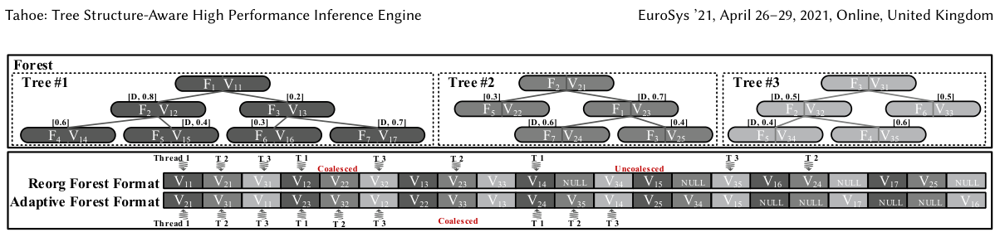
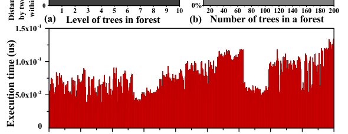
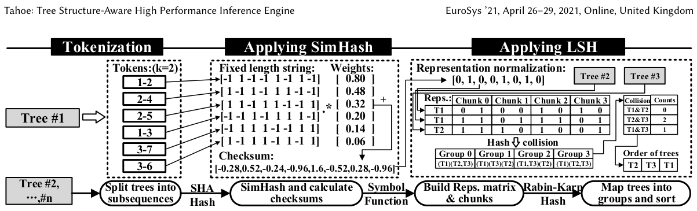
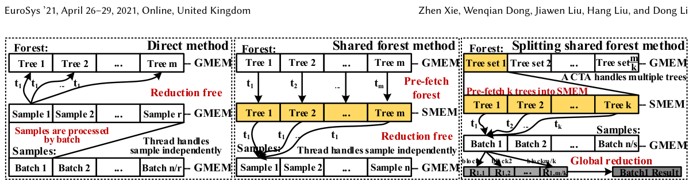
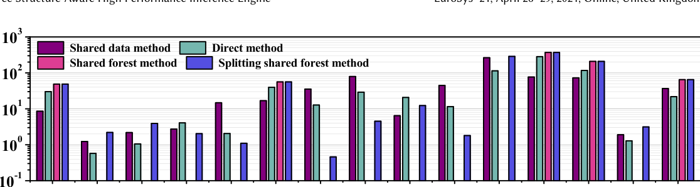
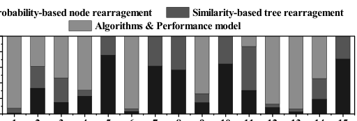
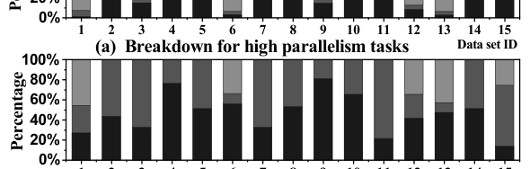
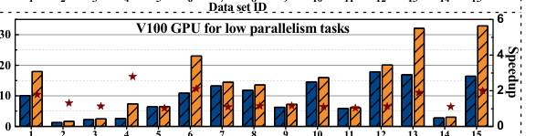

Tahoe: Tree Structure-Aware High Performance Inference Engine for Decision Tree Ensemble on GPU 번역
Zhen Xie, Wenqian Dong, Jiawen Liu, Hang Liu, Dong Li. Tahoe: Tree Structure-Aware High Performance Inference Engine for Decision Tree Ensemble on GPU. EuroSys 2021. 10.1145/3447786.3456251
원문 라이선스 CC BY 4.0. 이 페이지는 원문을 한국어로 옮긴 2차 저작물이며, study_helper 서재에서 Gemini로 기계 번역한 뒤 용어집을 적용했다. 저자나 출판사가 확인한 공식 번역이 아니다. 인용할 때는 원문을 기준으로 한다.
Tahoe: 나무 구조 인식 고성능 GPU 기반 의사결정 트리 앙상블 추론 엔진
Zhen Xie (zxie10@ucmerced.edu), 캘리포니아 대학교 머세드 캠퍼스 Wenqian Dong (wdong5@ucmerced.edu), 캘리포니아 대학교 머세드 캠퍼스 Jiawen Liu (jliu265@ucmerced.edu), 캘리포니아 대학교 머세드 캠퍼스 Hang Liu (hliu77@stevens.edu), 스티븐스 공과대학교 Dong Li (dli35@ucmerced.edu), 캘리포니아 대학교 머세드 캠퍼스
Zhen Xie (zxie10@ucmerced.edu), University of California, Merced Wenqian Dong (wdong5@ucmerced.edu), University of California, Merced Jiawen Liu (jliu265@ucmerced.edu), University of California, Merced Hang Liu (hliu77@stevens.edu), Stevens Institute of Technology Dong Li (dli35@ucmerced.edu), University of California, Merced
초록
결정 트리는 널리 사용되며, 예측 정확도를 높이기 위해 포레스트로 앙상블되는 경우가 많다. 그러나 GPU에서 결정 트리를 추론에 사용하는 것은 불규칙한 메모리 접근 패턴과 스레드 간 불균형한 워크로드 때문에 어렵다. 본 논문은 결정 트리 앙상블을 위한 트리 구조 인식 고성능 추론 엔진인 Tahoe를 제안한다. Tahoe는 효율적이고 병합된 메모리 접근을 가능하게 하기 위해 트리 노드를 재배열한다. 또한 Tahoe는 유사한 구조를 가진 트리들이 메모리에서 함께 그룹화되고 균형 잡힌 방식으로 스레드에 할당되도록 트리를 재배열한다. 메모리 접근 효율성 외에도, 우리는 일련의 추론 전략을 소개한다. 각 전략은 공유 메모리를 다르게 사용하며 리덕션 오버헤드에 다른 영향을 미친다. 우리는 임의의 포레스트와 데이터셋에 대한 추론 전략 선택을 안내하기 위해 성능 모델을 도입한다. Tahoe는 NVIDIA GPU의 세 가지 세대(Kepler, Pascal, Volta)에서 각각 3.82배, 2.59배, 2.75배 더 나은 성능을 보여, 최첨단 산업 품질 라이브러리인 FIL을 지속적으로 능가한다.
Decision trees are widely used and often assembled as a forest to boost prediction accuracy. However, using decision trees for inference on GPU is challenging, because of irregular memory access patterns and imbalance workloads across threads. This paper proposes Tahoe, a tree structure-aware high performance inference engine for decision tree ensemble. Tahoe rearranges tree nodes to enable efficient and coalesced memory accesses; Tahoe also rearranges trees, such that trees with similar structures are grouped together in memory and assigned to threads in a balanced way. Besides memory access efficiency, we introduce a set of inference strategies, each of which uses shared memory differently and has different implications on reduction overhead. We introduce performance models to guide the selection of the inference strategies for arbitrary forests and data set. Tahoe consistently outperforms the state-of-the-art industry-quality library FIL by 3.82x, 2.59x, and 2.75x on three generations of NVIDIA GPUs (Kepler, Pascal, and Volta), respectively.
CCS 개념: • 컴퓨팅 방법론 $\rightarrow$ 대규모 병렬 알고리즘; 기계 학습.
CCS Concepts: • Computing methodologies $\rightarrow$ Massively parallel algorithms; Machine learning.
키워드: 의사결정 트리 앙상블, 의사결정 트리 추론, 트리 구조, 성능 모델.
Keywords: Decision Tree Ensemble, Decision Tree Inference, Tree Structure, Performance Model.
ACM 참고 문헌 형식: Zhen Xie, Wenqian Dong, Jiawen Liu, Hang Liu, and Dong Li. 2021. Tahoe: GPU에서 의사결정 트리 앙상블을 위한 트리 구조 인식 고성능 추론 엔진. 제16회 유럽 컴퓨터 시스템 컨퍼런스(EuroSys ’21), 2021년 4월 26–29일, 온라인, 영국. ACM, New York, NY, USA, 15쪽. https://doi.org/10.1145/3447786.3456251
ACM Reference Format: Zhen Xie, Wenqian Dong, Jiawen Liu, Hang Liu, and Dong Li. 2021. Tahoe: Tree Structure-Aware High Performance Inference Engine for Decision Tree Ensemble on GPU. In Sixteenth European Conference on Computer Systems (EuroSys ’21), April 26–29, 2021, Online, United Kingdom. ACM, New York, NY, USA, 15 pages. https://doi.org/10.1145/3447786.3456251
1 서론
결정 트리는 실제에서 가장 널리 사용되는 머신러닝 모델 중 하나다[6, 20, 37, 41]. 결정 트리는 많은 분야(예: 광고 시스템[12, 50] 및 의료 진단[5, 43])와 기업에서 널리 사용되었다. 예를 들어, 페이스북은 수십억 명의 사용자에게 보낼 알림을 결정하기 위해 GPU에서 고성능 트리 추론 엔진을 사용하며[33], NVIDIA는 GPU에서 고성능 트리 라이브러리(FIL)[10]를 사용하여 대규모 추론 요청을 처리한다.
Decision trees are among the most widely used machine learning models in practice [6, 20, 37, 41]. Decision trees have been widely used in many fields (e.g., advertising systems [12, 50] and medical diagnosis [5, 43]) and in enterprises. For example, Facebook uses high-throughput tree inference engines on GPU [33] to decide which notifications to send to billions of users; NVIDIA uses a high-throughput tree library (FIL) [10] on GPU to serve massive inference requests.
결정 트리는 예측 정확도를 높이기 위해 종종 포레스트로 조립된다. 결정 트리 앙상블에서는 개별 트리가 내린 예측을 결합하여 최종 예측을 한다. 개별 트리가 내린 예측은 트리 루트에서 트리 리프까지의 경로다. 이 경로는 일반적으로 선택의 배열로 구성된다. 각 선택은 "$x_j < b_i$" 형태이며, 속성 $x_j$가 임계값 $b_i$보다 작은지 묻는다. 따라서 경로는 일련의 IF-THEN 규칙을 포함하며, 각 규칙은 트리 노드로 표현된다.
Decision trees are often assembled as a forest to boost prediction accuracy. With a decision tree ensemble, the predictions made by individual trees are combined together to make the final prediction. The prediction made by an individual tree is a path from the tree root to a tree leaf. The path is typically composed of an arrangement of choices. Each choice has the form "$x_j < b_i$", asking whether the attribute $x_j$ is less than a threshold $b_i$. Hence, the path includes a series of IF-THEN rules, each of which is represented by a tree node.
결정 트리 앙상블의 위 특성은 높은 처리량의 추론(즉, 주어진 시간 내에 가능한 한 많은 추론 요청을 처리하는 것)을 구현하는 데 주요 장애물을 만든다. 특히, 일반적인 사용 사례에서 대규모 추론 요청에 대한 높은 처리량 추론을 가능하게 하기 위해 사용자는 종종 GPU를 사용하며, 여기서 각 GPU 스레드는 하나 이상의 추론 요청에 대해 하나 이상의 트리를 사용하여 예측을 수행한다. 대규모 스레드 수준 병렬성과 높은 메모리 대역폭을 활용하여 사용자는 GPU가 높은 처리량 추론을 제공할 것으로 기대한다. 그러나 다른 GPU 스레드는 다른 트리를 순회하며, 포레스트 순회 중에 다른 트리 경로를 따르고 입력 샘플의 다른 속성에 접근할 수 있으며, 이는 불규칙한 메모리 접근 패턴을 유발한다. 스레드의 메모리 접근은 병합되지 않는 경향이 있으며, 이는 성능 저하, 낮은 하드웨어 활용률 및 활용되지 않는 메모리 대역폭으로 이어진다. GPU에서 결정 트리를 평가하기 위해 산업 품질 추론 엔진(즉, NVIDIA RAPIDS 제품군의 FIL[10])을 사용하여, 병합되지 않는 메모리 접근으로 인해 전역 메모리에서 요청된 데이터 대 총 가져온 데이터의 비율이 27.2%에 불과함을 보여준다.
The above characteristics of decision tree ensemble create major obstacles to implement high throughput inference (i.e., processing inference requests as many as possible within a given time). In particular, to enable high throughput inference for massive inference requests in common use cases, the user often uses GPU where each GPU thread makes prediction using one or more trees for one or more inference requests. Leveraging massive thread-level parallelism and high memory bandwidth, the user expects GPU to provide high throughput inference. However, different GPU threads traverse different trees, and can take different tree paths and access different attributes of input samples during the forest traverse, which causes irregular memory access patterns. Memory accesses from threads tend to be uncoalesced, which leads to poor performance, low hardware utilization and underutilized memory bandwidth. Using an industry-quality inference engine (i.e., FIL in NVIDIA RAPIDS suite [10]) to evaluate decision trees on GPU, we show that the ratio of requested data to total fetched data from global memory is only 27.2%, because of uncoalesced memory accesses.
더욱이 스레드 간의 부하 불균형 문제가 존재하며, 이는 위의 성능 문제를 더욱 악화시킨다. 특히, 결정 트리 앙상블(즉, 트리 훈련)을 구성하는 동안 훈련 샘플의 속성이 무작위로 선택될 수 있으며[22], 일반성을 향상시키고 과적합을 방지하기 위해 일부 사후 가지치기 기법[19, 42]이 트리에 적용될 수 있다. 결과적으로 앙상블의 트리들은 다른 깊이를 가지며, 순회할 다른 트리가 할당된 스레드는 다른 작업량을 가진다. 스레드 간의 이러한 작업량 불균형은 스레드 유휴 및 낮은 하드웨어 활용률을 유발한다. FIL에 대한 우리의 예비 작업은 스레드 간의 실행 시간이 최대 10배 차이가 남을 보여준다.
Furthermore, there is a load imbalance problem across threads, which makes the above performance problem even worse. In particular, during the construction of decision tree ensemble (i.e., tree training), attributes of training samples can be randomly selected [22] and some post-pruning techniques [19, 42] can be applied to the trees to enhance generality and prevent overfitting. As a result, trees in ensemble have different depths, and threads assigned with different trees to traverse have different workloads. Such workload imbalance across threads causes thread idling and low hardware utilization. Our preliminary work on FIL shows that execution time across threads has up to 10x difference.
결정 트리 추론에 GPU를 사용하는 것은 잘 탐구되지 않았으며, 기존 솔루션(즉, RAPID FIL[10])은 위의 문제를 완전히 해결하지 못한다. 메모리 비통합 문제를 해결하기 위해 FIL은 서로 다른 트리의 노드를 인터리브 방식으로 저장하는 저장 형식을 사용하므로, 서로 다른 트리의 노드에 접근하는 스레드는 메모리 접근을 병합할 가능성이 높다. 그러나 이 방법은 트리가 유사한 구조를 가지고 있고 다른 트리를 순회하는 것이 유사한 경로를 취한다고 가정한다. 이 두 가지 가정은 종종 성립하지 않는다. 또한 FIL을 사용하면 트리가 리프 근처에서 순회될 때 메모리 비통합 문제가 더 심각해진다는 점에 주목한다. 이는 트리가 더 깊이 순회됨에 따라 리프를 향한 동일한 경로를 통해 트리가 순회될 가능성이 작아지기 때문이다.
Using GPU for decision tree inference has not been explored well, and the existing solution (i.e., RAPID FIL [10]) cannot fully address the above problems. To address the memory uncoalescing problem, FIL employs a storage format that stores nodes of different trees in an interleaved way, such that threads accessing nodes of different trees have a high chance of coalescing their memory accesses. This method, however, assumes that trees have similar structures and traversing different trees takes similar paths. These two assumptions do not often hold. We also notice that with FIL, the memory uncoalescing problem becomes more serious as trees are traversed near the leaves, because the chance that the trees are traversed via the same path towards the leafs becomes smaller, as the trees are traversed deeper.
기존 솔루션의 비효과성을 설명하는 근본적인 이유는 결정 트리 앙상블에서 트리 구조를 고려하지 않는다는 점이다. 트리 구조는 트리 토폴로지(예: 트리 깊이)뿐만 아니라 트리를 순회하는 공통 경로가 무엇인지도 의미한다. 두 트리가 유사한 구조를 가지면, 트리 순회 중에 유사한 토폴로지와 공통 경로를 가진다. 트리 구조 정보를 활용하면 스레드 간에 트리를 균형 있게 할당하고, 트리 노드와 트리를 저장 공간에 배치하여 트리 접근 시 메모리 접근이 병합되도록 할 수 있다.
The fundamental reason accounting for the ineffectiveness of the existing solution is the ignorance of tree structure in decision tree ensemble. The tree structure not only means tree topology (e.g., tree depth), but also means what are the common paths to traverse the tree. If two trees have similar structures, they have analogous topology and common paths during tree traversing. Leveraging the tree structure information, we can assign trees between threads in a balanced way and arrange tree nodes and trees in storage in a way that memory accesses to trees tend to be coalesced.
특히, 트리 구조 정보를 사용하여 메모리에서 트리 노드를 재배열하므로, 여러 스레드에서 동시에 접근될 가능성이 있는 서로 다른 트리들의 노드가 연속적인 메모리 공간에 재배열된다. 이 방법은 본질적으로 서로 다른 트리들의 트리 구조 간의 유사성을 가능하게 하여, 매우 병합된 메모리 접근으로 이어진다. 또한, 우리는 트리 앙상블에서 트리를 재배열하여 유사한 구조를 가진 트리가 메모리에 함께 그룹화되고 스레드에 균형 있게 할당되도록 한다. 그러나 트리의 유사성을 결정하는 것은 쌍별 비교의 높은 계산 비용 때문에 어렵다. 우리는 SimHash[8]와 지역 민감 해싱[21]을 사용하여 서로 다른 트리 간의 효율적인 비교를 가능하게 하여 그들의 유사성을 결정한다.
In particular, we rearrange tree nodes in memory using the information of the tree structures, such that those nodes from different trees that tend to be accessed at the same time from multiple threads will be rearranged in contiguous memory space. This method in nature enables similarity between tree structures of different trees, which leads to highly coalesced memory accesses. Furthermore, we rearrange trees in tree ensemble, such that trees with similarity structure are grouped together in memory and assigned to threads in a balanced way. However, determining the similarity between trees is challenging, because of high computation cost of pairwise comparison. We employ SimHash [8] and Locality Sensitive Hashing [21] to enable efficient comparison between different trees to determine their similarity.
트리 구조를 인지하는 것 외에도, 공유 메모리를 최대한 활용하는 것이 추론 성능을 향상시키는 데 중요하다. 입력 샘플 또는 트리 중 하나를 공유 메모리에 배치할 수 있다(제한된 공유 메모리 용량 때문에 둘 다는 아님). 트리 구조, 샘플 속성(예: 샘플 크기) 및 스레드 블록 단위 리덕션의 빈도에 따라, 다른 데이터 배치 전략은 다른 추론 성능을 초래할 수 있다. 전통적인 추론 알고리즘은 샘플을 공유 메모리에 배치하는 전략을 사용하며, 다양한 트리 앙상블에 대해 일반적으로 좋은 성능을 내지 못한다. 따라서 우리는 세 가지 새로운 데이터 배치 전략을 도입한다. 트리 앙상블과 데이터셋이 주어졌을 때, 어떤 전략이 가장 좋은 성능을 내는지 결정하기 위해, 성능 모델을 도입하여 성능을 예측하고 최소한의 비용으로 최적의 전략을 선택한다. 이 접근 방식은 노드 재배열, 트리 재배열 및 표현으로 구성된 적응형 포레스트 형식과 결합되어, Tahoe라는 이름의 트리 구조 인식 고성능 추론 엔진으로 이어진다.
Besides being aware of tree structure, making the best use of shared memory is also critical to improve inference performance. Either input samples or trees can be placed into shared memory (but not both, because of limited capacity of shared memory). Depending on tree structures, sample properties (e.g., sample size), and frequency of thread-blockwise reduction, different data placement strategies can lead to different inference performance. The traditional inference algorithm uses a strategy that places samples in shared memory, and cannot generally perform well for various tree ensembles. Thus we introduce three new data placement strategies. Given a tree ensemble and dataset, in order to decide which strategy performs best, we introduce performance models to predict performance and select optimal strategy with negligible cost. This approach, in combination with our adaptive forest format that consists of node rearrangements, tree rearrangements, and variable-length representation, leads to a tree structure-aware high performance inference engine, named Tahoe.
일반적으로 Tahoe는 적응형 포레스트 형식과 세 가지 추론 전략 덕분에 입력 데이터 인식 및 아키텍처 인식 기능을 갖는다. Tahoe가 사용하는 성능 최적화 기법은 GPU에서 성능을 향상시키기 위해 정규 표현식 매칭[35]과 같은 불규칙한 데이터 구조를 가진 다른 응용 프로그램에도 적용될 잠재력이 있다.
In general, Tahoe is input data-aware and architecture-aware due to the adaptive forest format and three inference strategies respectively. The performance optimization techniques employed by Tahoe have potential to be applied to other applications with irregular data structures (e.g., regular expression matching [35]) to improve performance on GPU.
주요 기여를 요약하면 다음과 같다. • GPU에서 결정 트리 앙상블을 위한 추론 엔진인 Tahoe를 소개한다. Tahoe는 메모리 접근 효율성을 개선하고 부하 불균형을 피하기 위해 노드 및 트리 레이아웃을 재배열하고, 공유 메모리를 최대한 활용하고 병렬 리덕션 오버헤드를 줄이기 위해 최적의 데이터 배치 전략을 사용하여 다양한 트리 구조에 적응한다. • Kepler, Pascal 및 Volta 마이크로아키텍처를 기반으로 하는 세대 GPU에서 15개의 일반적인 데이터셋으로 Tahoe를 평가한다. Tahoe는 최첨단 산업 품질 추론 엔진인 FIL보다 일관되게 우수한 성능을 보인다. FIL과 비교하여 Tahoe는 Kepler, Pascal 및 Volta GPU에서 각각 높은 병렬성 작업에 대해 5.31배, 3.67배, 4.05배의 속도 향상(최대 9.58배, 8.77배, 10.14배)과 낮은 병렬성 작업에 대해 2.34배, 1.52배, 1.45배의 속도 향상(최대 5.08배, 3.82배, 3.17배)을 제공한다.
We summarize the major contributions as follows. • We introduce an inference engine, Tahoe, for decision tree ensemble on GPU; Tahoe is adaptive to various tree structures by re-arranging node and tree layout in memory to improve memory access efficiency and avoid load imbalance, and by using the optimal data placement strategy to make best use of shared memory and reduce parallel reduction overhead. • We evaluate Tahoe with 15 common datasets on three generations of GPU based on Kepler, Pascal and Volta microarchitectures. Tahoe consistently outperforms the state-of-the-art industry-quality inference engine FIL. Compared with FIL, Tahoe leads to 5.31x, 3.67x and 4.05x speedup (up to 9.58x, 8.77x, and 10.14x) for high parallelism tasks and 2.34x, 1.52x and 1.45x speedup (up to 5.08x, 3.82x, and 3.17x) for low parallelism tasks on Kepler, Pascal and Volta GPUs, respectively.
2 배경
이 절에서는 배경 정보를 소개한다.
In this section, we introduce background information.
결정 트리와 앙상블. 결정 트리는 다양한 조건부 분기를 사용하는 트리 형태의 그래프 구조를 이용하는 의사 결정 지원 시스템이다. 비모수적 학습 방법으로서, 결정 트리는 종종 조각별 상수 함수를 이용해 분류 또는 회귀 함수를 학습하는 데 사용된다 [24]. 그림 1의 Tree#1은 결정 트리의 예시이다. 이 트리는 루트 노드, 내부 노드 집합, 그리고 최종 결과를 예측하는 리프 노드로 구성된다. 본 논문에서는 가장 일반적인 이진 결정 트리를 연구한다. 이진 결정 트리에서 각 노드는 최대 두 개의 자식 노드를 갖는다. 결정 트리에서 각 결정 노드(루트 또는 내부 노드)는 추론을 위한 샘플의 입력 변수 중 하나에 해당하는 속성 인덱스(예: Tree#1의 루트에 있는 $F_1$), 어떤 경로를 따라야 하는지를 결정하는 값(예: Tree#1의 루트에 있는 $V_{11}$), 그리고 입력의 속성에 값이 없을 때 따라야 하는 기본 경로($D$)를 포함한다. 학습 과정 후, 트리의 각 엣지가 선택될 확률이 계산되며, 이는 추론 중에 Tahoe에서 사용된다. 논문의 나머지 부분에서 엣지가 선택될 확률을 간선 확률이라고 명명한다. 트리의 노드가 방문될 확률은 루트에서 노드까지의 엣지 확률의 곱이다. 논문의 나머지 부분에서 노드가 방문될 확률을 노드 확률이라고 명명한다. 노드 가능성은 간선 확률을 기반으로 계산될 수 있다.
Decision tree and ensemble. A decision tree is a decision support system that uses a tree-like graph structure with various conditional branches. As a non-parametric supervised learning method, decision trees are often used to learn classification or regression function by piecewise constant function [24]. Tree#1 in Figure 1 is an example of a decision tree. This tree consists of a root node, a set of interior nodes, and leaf nodes that predict final outcomes. We study binary decision trees in this paper, because they are the most common ones. With a binary decision tree, each node has at most two children nodes. With a decision tree, each decision node (either the root or an interior node) contains an attribute index (e.g., $F_1$ in the root of Tree#1) corresponding to one of the input variables in a sample for inference, a value (e.g., $V_{11}$ in the root of of Tree#1) to determine which path should be taken given an input, and a default path ($D$) to be taken when the attribute in the input does not have a value. After the training process, the probability that each edge of the tree is taken is calculated, and is used by Tahoe during inference. We name the probability that an edge is taken edge probability in the rest of the paper. The probability that a node in a tree is visited is the product of probabilities of edges from the root to the node. We name the probability that a node is visited node probability in the rest of the paper. The node possibility can be calculated based on edge probability.

결정 트리는 랜덤 숲 [22] 또는 그래디언트 부스트 결정 트리(GBDT) [15]와 같은 앙상블을 형성할 수 있다. 앙상블 내에서 트리는 트리 구조, 트리 깊이, 노드의 속성 인덱스 측면에서 서로 다를 수 있다. 다음 논의에서 "앙상블"과 "포레스트"라는 용어를 상호 교환적으로 사용한다.
Decision trees can form an ensemble, such as random forest [22] or Gradient Boost Decision Trees (GBDT) [15]. Within an ensemble, trees can differ from each other in terms of tree structure, tree depth and indexes of attributes in nodes. We use the terms “ensemble” and “forest” interchangeably in the following discussion.
저장 형식. 트리는 “reorg 형식”[10]이라는 형식을 사용하여 메모리에 저장되는 경우가 많다. 저장할 트리 앙상블이 주어지면, 이 형식은 서로 다른 트리의 노드를 인터리브한다. 특히, 모든 트리의 루트 노드가 먼저 저장되고, 그다음 모든 트리의 두 번째 레벨에 있는 왼쪽 노드가 저장되며, 그다음 모든 트리의 두 번째 레벨에 있는 오른쪽 노드가 저장되는 식이다. 각 트리의 노드는 너비 우선 순서로 저장된다.
Storage format. Trees are often stored in memory using a format called “reorg format” [10]. Given a tree ensemble to store, this format interleaves nodes of different trees. In particular, the root nodes of all trees are stored first, followed by left nodes at the second levels of all trees, and followed by right nodes at the second levels of all trees, and so on. The nodes for each tree are stored in breadth-first order.
GPU에서의 트리 추론 알고리즘. NVIDIA RAPIDS [10]에서 사용되는 산업 품질의 트리 추론 엔진인 FIL에서 사용되는 최첨단 트리 추론 알고리즘을 논의한다. 이 추론 알고리즘( 데이터라고 명명됨)을 사용하면 각 스레드 블록이 전체 트리 앙상블에 접근한다. 각 스레드 블록 내에서 트리 앙상블의 트리는 스레드에 라운드 로빈 방식으로 균등하게 할당된다. 각 스레드 블록 내의 스레드는 가능한 한 많은 샘플(즉, 샘플 배치)을 공유 메모리로 로드하여 추론한다. 각 샘플 배치는 공유 메모리를 채울 만큼 충분히 크다. 추론을 위한 샘플이 주어지면, 스레드 블록 내의 각 스레드는 할당된 트리를 사용하여 예측을 수행하고, 그런 다음 스레드 블록 내의 모든 스레드는 스레드 블록 단위 리덕션을 수행하여 개별 트리의 예측 결과를 기반으로 최종 예측을 계산한다. 최종 예측은 전역 메모리에 기록된다. 추론을 위한 샘플은 GPU가 제공하는 대규모 병렬 처리를 활용하기 위해 배치 단위로 처리된다.
Tree inference algorithm on GPU. We discuss the state-of-the-art tree inference algorithm employed in FIL, an industry-quality tree inference engine used in NVIDIA RAPIDS [10]. With this inference algorithm (named shared data), each thread block accesses the whole tree ensemble; In each thread block, trees in the tree ensemble are evenly assigned to threads in a round-robin way; Threads in each thread block load as many samples as possible (i.e., a batch of samples) into shared memory for inference. Each batch of samples is just big enough to fill shared memory. Given a sample for inference, each thread in a thread block uses its assigned trees to make prediction, and then all threads in the thread block perform a thread block-wise reduction to compute the final prediction based on prediction results of individual trees. The final prediction is then written into global memory. Samples for inference are processed batch by batch, in order to leverage massive parallelism offered by GPU.
3 동기 부여
트리 추론은 불규칙한 메모리 접근을 유발하여 GPU의 높은 메모리 대역폭 잠재력을 완전히 활용하지 못하게 할 수 있다. 우리는 일반적인 데이터셋(Higgs [4])에서 XGBOOST [9]로 훈련된 랜덤 포레스트를 사용하여 이 문제를 연구한다. 데이터셋의 70%를 훈련에, 30%를 추론에 사용한다. 포레스트는 120개의 트리로 구성되며 각 트리의 최대 깊이는 10이다. 추론 엔진으로 FIL을 사용하며, FIL은 추론 알고리즘으로 공유 데이터 전략을 사용한다. 우리는 다음과 같이 세 가지 성능 문제를 확인한다.
Tree inference can lead to irregular memory accesses and fail to leverage full potential of high memory bandwidth of GPU. We study this problem using a random forest trained by XGBOOST [9] on a common dataset (Higgs [4]). We use 70% the dataset for training and 30% for inference. The forest has 120 trees and the maximum depth of each tree is 10. We use FIL as the inference engine that uses the shared data strategy as the inference algorithm. We identify three performance problems discussed as follows.

병합되지 않은 메모리 접근. 그림 2(a)는 동일한 명령을 실행하는 워프 내에서 인접한 스레드 ID를 가진 두 스레드가 접근하는 두 주소 간의 평균 거리를 보여준다. 그림 2(a)는 각 트리 레벨에서의 평균 거리를 보여준다. 그림은 평균 거리가 처음에 매우 작다는 것을 보여준다. 이는 reorg 형식의 효율성 때문이다. 이 형식은 다른 트리의 노드를 인터리브하여, 다른 스레드가 동일한 분기(왼쪽 또는 오른쪽)를 탈 때 노드가 접근되면 메모리 접근이 병합된다. 그러나 추론이 트리의 더 깊은 레벨로 진행됨에 따라 평균 거리가 커진다. 두 접근 간의 거리가 메모리 트랜잭션 크기보다 커지면 메모리 비병합이 발생한다. 거리가 커지는 이유는 두 가지다: (1) 트리가 더 깊이 탐색될수록, 다른 트리가 다른 분기를 통해 탐색될 가능성이 높아진다; (2) 트리는 서로 다른 위상 구조를 가진다.
Uncoalesced memory accesses. Figure 2(a) shows the average distance of two addresses accessed by two threads with adjacent thread IDs within the same warp running the same instruction. Figure 2(a) shows the average distance at each level of trees. The figure shows that the average distance is small at the very beginning. This is due to the effectiveness of the reorg format. This format interleaves nodes of different trees, such that when nodes are accessed by different threads taking the same branches (left or right), their memory accesses are coalesced. However, as the inference traverses into deeper levels of the trees, the average distance becomes larger. When the distance of two accesses is larger than the memory transaction size, memory uncoalescence happens. The distance becomes larger, because of two reasons: (1) As the trees are traversed deeper, the chance that different trees are traversed using different branches becomes higher; (2) trees have different typologies.
이 예시에서는 두 메모리 접근 사이의 거리가 128바이트(메모리 트랜잭션의 크기)보다 크기 때문에, 두 메모리 요청이 동일한 메모리 트랜잭션으로 병합되지 않는다. 글로벌 메모리 접근의 효율성을 측정하기 위해 성능 카운터를 사용한 결과, 병합되지 않은 메모리 접근으로 인해 트리 레벨 7~10에서 글로벌 메모리로부터 가져온 전체 데이터 대비 요청된 데이터의 비율이 13.7%에 불과함을 관찰했다. 본 논문의 나머지 부분에서는 메모리 접근 병합성의 관점에서 메모리 접근 효율성을 가리킨다. 우리는 글로벌 메모리로부터 가져온 전체 데이터 대비 요청된 데이터의 비율을 글로벌 메모리에서의 메모리 접근 효율성을 정량화하는 지표로 사용한다.
In this example, as the distance between two memory accesses is greater than 128 bytes (the size of a memory translation), the two memory requests are not coalesced into the same memory transaction. Using performance counters to measure efficiency of global memory accesses, we observe that at the tree levels of 7-10, the ratio of requested data to total data fetched from global memory is only 13.7%, because of uncoalesced memory accesses. In the rest of the paper, we refer memory accesses efficiency in terms of memory access coalesceness. We use the ratio of requested data to total data fetched from global memory as a metric to quantify memory access efficiency in global memory.
스레드 간 부하 불균형. FIL의 트리 추론은 트리 균형을 고려하지 않고 스레드 블록 내의 스레드에 라운드 로빈 방식으로 트리를 할당한다. 결과적으로 일부 스레드는 더 큰 트리를 할당받아 다른 인접 스레드보다 더 많은 계산을 수행하게 되어 스레드 간 부하 불균형을 유발한다. 그림 2(c)는 스레드 블록 내 스레드들의 실행 시간을 보여준다. 스레드 블록은 1000개의 샘플에 대한 추론을 수행한다. 변동 계수(CV)를 사용하여 분산을 정량화한다: CV=49.1%로, 스레드 간 실행 시간의 큰 분산을 나타낸다.
Load imbalance across threads. The tree inference in FIL assigns trees to threads in a thread block in a round-robin way without the awareness of tree balance. As a result, some threads are assigned with taller trees and perform more computation than other adjacent threads, causing load imbalance across threads. Figure 2(c) shows the execution time of threads in a thread block. The thread block performs inferences for 1000 samples. We use coefficient of variation (CV) to quantify the variance: CV=49.1%, indicating a large variance in execution time across threads.
높은 리덕션 오버헤드. 데이터의 추론 알고리즘은 개별 스레드의 예측 결과를 바탕으로 최종 예측을 계산하기 위한 블록 단위 리덕션을 포함한다. 이 리덕션 연산은 우리 예시(120개 트리)에서 전체 추론 시간의 최대 53%를 차지한다.
High reduction overhead. The inference algorithm of shared data includes a block-wise reduction to compute the final prediction based on prediction results of individual threads. The reduction operation takes up to 53% of total inference time in our example (120 trees).
감소 오버헤드를 더 정량화하기 위해 포레스트의 트리 수를 변경하고, 다시 훈련시킨 후, 추론 중 감소 오버헤드를 측정한다. 그림 2(b)는 트리 수를 10개에서 200개로 변경했을 때의 감소 오버헤드를 보여준다. 그림은 감소가 전체 추론 시간의 35%-72%를 차지한다는 것을 보여준다; 포레스트의 트리 수가 많아질수록 오버헤드가 커진다.
To further quantify the reduction overhead, we change the number of trees in the forest, re-train it, and measure the reduction overhead during inference. Figure 2(b) shows the reduction overhead when we change the number of trees from 10 to 200. The figure shows that the reduction takes 35%-72% of the total inference time; As the number of trees in a forest becomes larger, the overhead becomes larger.
GPU에서의 위 세 가지 성능 문제는 희소 행렬 곱셈(sparse matrix multiplication) [23, 47–49], 너비 우선 탐색(breadth-first search) [26], 과학적 머신러닝(scientific ML) [13, 14], 클라우드 컴퓨팅(cloud computing) [46]과 같은 다른 응용 분야에서도 찾아볼 수 있다. 이러한 문제들을 해결하는 것은 불규칙한 데이터 구조를 가진 응용 분야의 성능을 향상시키는 데 전반적으로 도움이 된다.
The above three performance problems on GPU can be found in other applications as well, such as sparse matrix multiplication [23, 47–49], breadth-first search [26], scientific ML [13, 14], and cloud computing [46]. Addressing these problems is generally helpful to improve performance of those applications with irregular data structures.
4 적응형 포레스트 형식
비효율적인 메모리 접근과 부하 불균형 문제를 해결하기 위해 세 가지 기법을 소개한다.
We introduce three techniques to address the problems of inefficient memory accesses and load imbalance.
4.1 확률 기반 노드 재배열
4.1 Probability-based Node Rearrangement
FIL에서 사용하는 reorg 형식에서 메모리 비통합을 야기하는 근본적인 이유는, 서로 다른 트리를 처리하는 스레드가 다른 분기를 탐색하는데, 서로 다른 트리의 다른 분기에 있는 노드들이 메모리 공간에서 연속적으로 배치되지 않을 수 있기 때문이다.
The fundamental reason accounting for memory uncoalescing in the reorg format used in FIL is because threads working on different trees traverse different branches, while nodes at different branches of the different trees may not be laid out consecutively in memory space.
다시 그림 1을 예로 들어보자. 이 예시에서는 각 트리 노드(속성 인덱스, 임계값, 기본 결정 포함)의 크기가 메모리 트랜잭션 크기의 1/3이라고 가정한다. 즉, 하나의 메모리 트랜잭션은 최대 세 개의 노드 데이터를 담을 수 있다. 그림 1의 세 트리에서 세 번째 레벨에 있는 노드들은 reorg 형식을 사용하여 다음과 같은 순서로 저장된다: "$V_{14}$, NULL, $V_{34}$, $V_{15}$, NULL, $V_{35}$, $V_{16}$, $V_{24}$, NULL, $V_{17}$, $V_{25}$, NULL". 동일한 스레드 블록 내의 세 스레드가 각각 왼쪽, 오른쪽, 오른쪽 분기를 따라 세 번째 레벨에 도달할 때, "$V_{14}, V_{24}, V_{35}$"가 접근되는데, 이는 연속적이지 않고 동일한 메모리 트랜잭션에 속하지 않는다.
Take Figure 1 as an example again. In this example, we assume that the size of each tree node (including attribute index, threshold and default decision) is equal to one third of a memory transaction size. In other words, a memory transaction can contain data for up to three nodes. The nodes at the third level of the three trees in Figure 1 are stored in the following order using the reorg format, “$V_{14}$, NULL, $V_{34}$, $V_{15}$, NULL, $V_{35}$, $V_{16}$, $V_{24}$, NULL, $V_{17}$, $V_{25}$, NULL”. When the three threads in the same thread block takes the left, right, and right branches to reach the third level respectively, “$V_{14}, V_{24}, V_{35}$” are accessed, which are not contiguous and does not fall into the same memory transaction.
이러한 문제를 해결하기 위해, 두 개의 자식 노드를 가진 각 노드에 대해 왼쪽 자식 노드가 오른쪽 자식 노드보다 항상 방문될 가능성이 높도록 보장한다. 이 방법을 사용하면, 서로 다른 트리(하지만 서로 다른 트리의 같은 레벨에 있는)에 있고 방문될 가능성이 높은 노드들이 연속적으로 배치되므로, 스레드들이 메모리 통합된 방식으로 접근할 수 있다. 위 방법은 트리 훈련 후에 두 자식 노드를 교환함으로써 구현된다. 특히, 간선 확률 정보를 기반으로, 왼쪽 자식이 오른쪽 자식보다 방문될 가능성이 낮으면 두 자식 노드를 교환한다. 각 자식 노드의 하위 노드들은 자식 노드가 교환될 때 함께 이동한다. 이 방법은 트리의 위에서 아래로 진행된다. 이 방법을 "확률 기반 노드 재배열"이라고 부른다.
To address the above problem, for each node with two children nodes, we ensure that the left child node always has higher possibility to be visited than the right child. Using this method, nodes that are at different trees (but at the same level of different trees) and have high probability to be visited are placed contiguously, so that they can be accessed by threads in a memory-coalesced way. The above method is implemented by swapping the two children nodes after tree training. In particular, based on the information of edge probability, if the left child has lower possibility to be visited than the right child, we swap the two children nodes; The descents of each child node go with the child node, as it is swapped. This method goes from top to bottom of the tree. We call this method the “probability-based node rearrangement”.
그림 1의 예시를 사용하여 위 방법을 더 자세히 설명한다. 트리#2에서, 두 번째 레벨의 루트 노드의 두 자식 노드의 간선 확률은 각각 0.3과 0.7이다. 오른쪽 자식 노드($V_{23}$)는 왼쪽 자식 노드($V_{22}$)보다 방문될 가능성이 높다. 따라서 두 자식 노드를 교환한다. $V_{23}$의 하위 노드들(즉, $V_{24}$와 $V_{25}$)은 $V_{23}$이 교환될 때 함께 이동한다. 교환 후, 트리#2의 노드 $V_{25}$와 트리#1의 노드 $V_{14}$는 연속된 메모리 공간에 배치된다. 추론 중에 두 트리가 탐색될 때, 선택되고 접근되는 분기들은 대부분 동일할 것이며, 노드 접근은 병합될 가능성이 높다.
We use the example in Figure 1 to further depict the above method. In Tree#2, the edge possibility of two children nodes of the root node at the second level is 0.3 and 0.7. The right child node ($V_{23}$) has higher possibility to be visited than the left child node ($V_{22}$). Hence, the two children nodes are swapped. The descents of $V_{23}$ (i.e., $V_{24}$ and $V_{25}$) go with $V_{23}$, as $V_{23}$ is swapped. After swapping, the node $V_{25}$ in Tree#2 and node $V_{14}$ in Tree#1 are placed into contiguous memory space. When the two trees are traversed during inference, the branches that are taken and accessed are most likely the same, and the nodes accesses are likely coalesced.
본질적으로, 확률 기반 노드(node) 재배열은 트리 훈련 중에 학습된 데이터 속성을 활용하여 트리 추론(inference) 중에 성능 최적화를 유도한다. 이는 잘 훈련된 모델이 다음을 볼 것으로 예상되기 때문에 실현 가능하다.
In essence, the probability-based node rearrangement leverages data properties learned during the tree training to direct performance optimization during the tree inference. This is feasible, because a well-trained model is expected to see
Tahoe: 트리 구조 인식 고성능 추론 엔진
Tahoe: Tree Structure-Aware High Performance Inference Engine
4.2 유사성 기반 트리 재배열
4.2 Similarity-based Tree Rearrangement
트리의 유사성을 기반으로 부하 불균형 문제를 해결한다. 두 트리가 추론 중에 유사한 경로를 통해 탐색되고 유사한 속성에 접근하는 경향이 있다면 두 트리가 유사하다고 주장한다. 포레스트에 대한 추론이 발생하기 전에 온라인으로 트리 유사성을 정량화하는데, 이는 포레스트에 대해 서로 다른 트리 재배치를 사용할 수 있게 하고 포레스트를 사용한 증분 학습에 대한 유연성을 제공한다. 증분 학습은 트리 구조를 변경할 수 있으며, 따라서 트리 유사성을 그에 따라 변경할 수 있다.
We address the load imbalance problem based on the similarity of trees. We claim two trees are similar, if during inference, the two trees tend to be traversed using the similar paths and accessing similar attributes. We quantify the tree similarity online before any inference happens on a forest, which allows the usage of different tree rearrangements for a forests and enables the flexibility for incremental learning with the forest. The incremental learning can change the tree structures, and hence change the tree similarity accordingly.
트리 간의 유사성을 정량화하고 주어진 포레스트에서 높은 유사성을 가진 트리를 효율적으로 식별하기 위해 SimHash [8]와 지역 민감 해싱(LSH) [8]을 사용한다. 트리 간의 유사성을 정량화하는 전통적인 방법은 쌍별 비교 [45]를 사용하는데, 이는 높은 계산 복잡도를 초래한다. 우리의 평가는 쌍별 비교가 3000개의 트리로 구성된 트리 앙상블에 대해 최대 19분까지 걸릴 수 있음을 보여준다. 이러한 큰 오버헤드는 온라인 솔루션에 너무 크다. SimHash와 LSH를 사용하면 복잡도가 훨씬 작아진다(나중에 논의). SimHash와 LSH는 정보 검색 분야에서 입력 정보 간의 유사성을 찾는 데 매우 성공적이었다 [38]. 우리의 경우, SimHash는 트리를 항목으로 변환하는 데 사용되어 트리 간의 유사성을 비교할 수 있게 하고, LSH는 유사한 항목을 동일한 버킷에 해싱하는 데 사용되어 높은 유사성을 가진 여러 트리를 동일한 그룹으로 그룹화할 수 있게 한다. SimHash와 LSH를 사용한 알고리즘을 다음과 같이 설명하고 "유사성 기반 트리 재배치"라고 부른다. 알고리즘은 토큰화, SimHash 적용, LSH 적용의 세 단계로 구성된다. 그림 3은 재배치 과정을 설명하는 예시를 제공한다.
To quantify similarity between trees and efficiently identify trees with high similarity in a given forest, we employ SimHash [8] and Locality Sensitive Hashing (LSH) [8]. The traditional method to quantify similarity between trees uses pairwise comparison [45], which leads to high computation complexity. Our evaluation shows that using pairwise comparison can take up to 19 minutes for a tree ensemble with 3000 trees. Such large overhead is too large for an online solution. Using SimHash and LSH, the complexity becomes much smaller (discussed later). SimHash and LSH have been very successful in the filed of information retrieval to find similarity among input information [38]. In our case, SimHash is used to transform trees to items such that we can compare the similarity of trees, and LSH is used to hash similar items into the same buckets, such that we can group multiple trees with high similarity into the same group. We describe our algorithm using SimHash and LSH as follows and call it "similarity-based tree rearrangement". Our algorithm includes three steps: tokenization, applying SimHash, and applying LSH. Figure 3 gives an example to depict the process of the rearrangement.
토큰화.
Tokenization.
이 단계는 각 트리의 메모리 내 표현을 토큰 집합으로 변환하여 데이터 처리(data processing)를 위해 SimHash와 LSH를 효과적으로 사용할 수 있도록 한다. 특히, 주어진 트리에 대해 이 단계는 루트에서 리프 노드(leaf node)까지의 각 경로를 토큰 집합으로 나눈다. 각 토큰은 $T_{nodes}$ 노드(node)를 포함한다($T_{nodes}$는 구성 가능한 매개변수이며 그림 3에서는 $T_{node} = 2$를 예시로 사용한다).
This step transforms the in-memory representation of each tree into a set of tokens, such that we can effectively use SimHash and LSH for data processing. In particular, given a tree, this step divides each path from the root to a leaf node into a set of tokens. Each token includes $T_{nodes}$ nodes ($T_{nodes}$ is a configurable parameter and we use $T_{node} = 2$ in Figure 3 as an example).
SimHash 적용.
Applying SimHash.
이 단계에서는 먼저 각 토큰을 $1 \times L_{hash}$ 문자열로 변환하기 위해 먼저 해싱 알고리즘(SHA1 [16])을 사용한다. 여기서 $L_{hash}$는 각 토큰의 길이이며 그림 3에서는 예시로 8과 같다. 해싱 때문에 트리의 모든 문자열은 길이가 같다. 각 문자열은 $L_{hash}$개의 부울 변수로 이루어진 벡터이다. 문자열에 해당 문자열로 변환된 토큰의 마지막 노드의 노드 확률인 가중치를 곱한다. 이 가중치를 더하는 것은 LSH가 트리 간의 유사성을 포착하는 효율성을 높이기 위해 필요하다. 그 후, 트리의 모든 문자열을 더하여 새로운 문자열을 생성하는데, 이것이 해당 트리의 SimHash 결과이다. 나머지 논의에서는 SimHash 결과를 체크섬이라고 명명한다.
In this step, we first transform each token into a $1 \times L_{hash}$ string using a hashing algorithm (SHA1 [16]), where $L_{hash}$ is the length of each token and equals to 8 in Figure 3 as an example. All strings of a tree have the same length, because of hashing. Each string is a vector of $L_{hash}$ Boolean variables. We multiple each string with a weight which is the node probability of the last node in the token transformed to that string. Adding this weight is necessary to increase the effectiveness of LSH to capture similarity between trees. After that, all strings of a tree are added to generate a new string, which is the SimHash result of that tree. We name the SimHash result checksum in the rest of the discussion.
LSH 적용.
Applying LSH.
이 단계에서는 각 체크섬(checksum)이 먼저 벡터로 정규화된다. 이 정규화(normalization)는 체크섬(checksum)의 각 항목을 0(항목 값이 0보다 작을 경우) 또는 1(항목 값이 0보다 크거나 같을 경우)로 정규화한다. 이 정규화(normalization)는 차원 축소(dimension reduction) [25]를 위해 LSH를 효율적으로 적용하는 데 필요하다. 정규화(normalization) 후, 각 정규화된 체크섬(checksum)은 M개의 청크(chunk)로 균등하게 나뉜다(그림 3에서는 M = 4를 예시로 사용한다). 각 청크(chunk)에 지역 민감 해싱(특히 Rabin-Karp 해싱)을 적용한다. 두 정규화된 체크섬(checksum)에서 나온 두 청크(chunk)가 해싱 충돌(hashing collision)을 일으키면, 두 정규화된 체크섬(checksum)은 유사성을 가지며 그 충돌이 계산된다. LSH 적용 후, 트리는 버킷(bucket)으로 분리되고 동일한 버킷(bucket)에 있는 트리는 유사성을 가진다. 각 버킷(bucket)에서 각 트리 쌍 사이에 발생한 충돌 수를 계산하고, 어떤 트리를 서로 가깝게 배치해야 할지 결정하기 위해 버킷(bucket) 전체의 충돌 수를 정렬한다. 특히, 트리 A와 트리 B 사이의 충돌 수가 A와 다른 어떤 트리 사이의 충돌 수 중에서 가장 클 때, 트리 A는 트리 B 근처에 배치된다. LSH 적용 후, 버킷(bucket)에 있는 트리는 라운드 로빈(round-robin) 방식으로 스레드(thread)에 할당되어 스레드(thread) 간에 로드가 대략적으로 균형을 이룬다.
In this step, each checksum is first normalized to a vector. This normalization regularizes each item of the checksum to either 0 (if the item value is less than 0) or 1 (if the item value is greater than or equal to 0). This normalization is necessary to efficiently apply LSH for the purpose of dimension reduction [25]. After normalization, each normalized checksum is evenly divided into M chunks (M = 4 in Figure 3 as an example). We apply a locality sensitive hashing (particularly the Rabin-Karp hashing) to each chunk. If two chunks from two normalized checksums has a hashing collision, then the two normalized checksums have similarity and their collision is counted. After applying LSH, trees are separated into buckets and trees in the same bucket has similarity. We count the number of collisions happened between each pair of trees in each bucket, and sort the number of collisions across buckets to decide which trees should be placed near each other. In particular, a tree A is placed near another tree B, when the number of collisions between A and B is the largest among the collisions between A and any other tree. After applying LSH, trees in the bucket are then assigned to threads in a round-robin way, such that loads are roughly balanced between threads.
복잡도 분석.
Complexity analysis.
쌍별 비교는 높은 계산 복잡도(특히 $O(2^{D_{tree}} * N_{trees})$)
The pairwise comparison leads to high computation complexity (particularly $O(2^{D_{tree}} * N_{trees})$,

(여기서 $D_{tree}$는 평균 트리 깊이이고 $N_{trees}$는 트리의 개수이다)와 높은 공간 복잡도(space complexity)(특히 $O(N_{trees})$)를 초래한다. SimHash와 LSH를 사용하면 계산 복잡도는 $O(D_{tree} * N_{trees}) + O(N_{trees})$가 되어 훨씬 작아지며, 공간 복잡도는 $O(N_{tokens}*L_{hash})+O(N_{trees}*M)$가 된다. 여기서 $N_{tokens}$는 토큰의 개수, $L_{hash}$는 각 토큰의 길이, $M$은 청크의 개수이다. 이러한 공간 복잡도는 매개변수 값에 따라 쌍별 비교의 공간 복잡도와 비등하거나 훨씬 더 작다.
where $D_{tree}$ is the average tree depth and $N_{trees}$ is the number of trees) and high space complexity (particularly $O(N_{trees})$). Using SimHash and LSH, the computation complexity becomes $O(D_{tree} * N_{trees}) + O(N_{trees})$, which is much smaller; The space complexity becomes $O(N_{tokens}*L_{hash})+O(N_{trees}*M)$, where $N_{tokens}$ is the number of tokens, $L_{hash}$ is the length of each token, and $M$ is the number of chunks. This space complexity is comparable or much smaller than that of the pairwise comparison, depending on the values of the parameters.
예시. 그림 3에는 그림 1에 제시된 세 개의 트리가 있다. 각 트리는 6개의 토큰으로 토큰화되며, 각 토큰에는 두 노드에 대한 정보가 포함되어 있다($T_{nodes}$는 2로 설정됨). 각 토큰은 $1 \times 8$ 문자열로 변환되며($L_{hash}$는 8로 설정됨), 각 문자열에 가중치가 곱해진다. 그 후, SimHash를 적용한 결과로서 모든 가중치가 곱해진 문자열을 함께 누적하여 $1 \times 8$ 체크섬을 생성한다. 그런 다음 체크섬은 1과 0으로 이루어진 벡터로 정규화된다.
An example. In Figure 3, we have three trees from Figure 1. Each tree is tokenized into six tokens, each of which contains information for two nodes ($T_{nodes}$ is set to 2). Each token is transformed into a $1 \times 8$ string ($L_{hash}$ is set to 8), and each string is multiplied by a weight. After that, all weighted strings are accumulated together to build a $1 \times 8$ checksum as the result of applying SimHash. The checksum is then normalized to a vector of ones and zeros.
주어진 포레스트의 세 트리에서 세 개의 정규화된 체크섬을 얻는다. 각 체크섬은 네 개의 $2 \times 1$ 청크로 나뉜다. 각 청크에 LSH 해싱을 적용한다. 트리 A의 청크가 다른 트리 B의 청크와 충돌하면, 트리 A와 B는 동일한 버킷에 그룹화되고 해당 버킷의 충돌 횟수를 1로 센다. LSH를 적용한 후, 각 버킷에 대한 충돌 횟수를 얻는다. 우리의 예시에서는 세 개의 버킷(T1,T2), (T2, T3), (T1, T3)이 있고, 세 버킷에 대한 충돌 횟수는 각각 0, 2, 1이다. 수집된 충돌 횟수를 기반으로, 메모리에 배치되는 트리의 순서는 T2, T3, T1이다. 왜냐하면 T2와 T3이 가장 많은 충돌(또는 유사성)을 가지고 있고, T3와 T1이 두 번째로 높은 유사성을 가지기 때문이다.
Given the three trees in the forest, we have three normalized checksums. Each checksum is divided into four $2 \times 1$ chunks. We apply LSH hashing to each chunk. If a chunk in a tree A has a collision with a chunk in another tree B, then the trees A and B are grouped into the same bucket and we count the collision in this bucket by one. After applying LSH, we get the number of collisions for each bucket. In our example, we have three buckets (T1,T2), (T2, T3), and (T1, T3), and the number of collisions for the three buckets are 0, 2, and 1 respectively. Based on the collected number of collisions, the order of trees laid in memory is T2, T3, and T1, because T2 and T3 have the largest number of collisions (or similarity), and T3 and T1 have the second largest similarity.
4.3 적응형 포레스트 형식
4.3 Adaptive Forest Format
위 논의를 바탕으로 적응형 포레스트 형식을 소개한다. 이 형식은 모든 트리의 루트를 먼저 저장한다(전통적인 reorg 형식과 같이). 전통적인 형식은 루트를 무작위로 배치하는 것과 달리, 유사성 기반 트리 재배치 결과를 따라 어떤 루트를 서로 가깝게 배치할지 결정한다. 루트 이후에는 확률 기반 노드 재배치에 따라 각 루트의 왼쪽 및 오른쪽 자식 노드의 순서를 전환할지 여부를 결정한다. 루트의 자식 노드 외에, 다른 모든 하위 노드는 동일한 방법으로 저장된다.
Based on the above discussion, we introduce an adaptive forest format. The format stores the roots of all trees first (as the traditional reorg format). Different from the traditional format that place roots randomly, we decide which roots should be placed close to each other according to the results of similarity-based tree rearrangement. After the roots, we decide whether the order of left and right child nodes of each root should be switched, based on the probability-based node rearrangement. Besides the child nodes of roots, all other descendant nodes use the same method to be stored.
위에서 언급한 노드 및 트리 재배열 외에도, 전통적인 저장 형식에서 속성 인덱스의 표현을 개선한다. 전통적인 저장 형식은 포레스트에 서로 다른 속성이 몇 개 있든 상관없이 각 노드에서 속성을 인덱싱하기 위해 고정 길이 표현(보통 4바이트 또는 8바이트)을 사용한다. 우리의 저장 형식은 포레스트에 있는 서로 다른 속성의 개수에 기반하여 표현의 길이를 결정한다. 길이는 모든 속성을 인덱싱하기에 충분하다. 4바이트 고정 길이 표현을 사용하는 대신 이 새로운 표현을 사용함으로써, 평가된 데이터셋에서 최대 23.6%까지 저장 공간을 절약한다. 트리 및 노드 재배열과 결합된 속성 인덱싱을 위한 새로운 표현은 적응형 포레스트 형식을 구성한다.
Besides the above node and tree rearrangements, we improve the representation of attribute index in the traditional storage format. The traditional storage format uses a fixed-length representation (usually four or eight bytes) to index an attribute in each node, no matter how many different attributes are there in the forest. Our storage format decides the length of the representation based on the number of different attributes in the forest. The length is just enough to index all attributes. Using this new representation instead of using a four-byte, fixed-length representation, we save storage space by up to 23.6% in our evaluated dataset. The new representation to index attributes in combination with tree and node rearrangement form an adaptive forest format.
5 추론 전략 설계
적응형 포레스트 형식은 전역 메모리 접근의 효율성을 개선하고 부하 불균형을 줄인다. 본 절에서는 그림 2(b)에 나타난 높은 리덕션 오버헤드 문제를 어떻게 해결할지 연구한다. 또한 높은 성능을 위해 공유 메모리를 어떻게 최대한 활용할지 탐구한다.
The adaptive forest format improves efficiency of global memory accesses and reduces load imbalance. In this section, we study how to address the problem of high reduction overhead shown in Figure 2(b). We also explore how to make best use of shared memory for high performance.
5.1 추론 전략
5.1 Inference Strategies
기존 공유 데이터 전략은 데이터 샘플을 공유 메모리에 로드하고 각 스레드에 포레스트의 일부를 할당한다. 샘플에 대한 최종 추론 결정을 내리기 위해 스레드 블록 내의 모든 스레드는 블록 단위 리덕션 연산을 사용해야 한다. 이 리덕션을 피하고 공유 메모리의 성능 잠재력을 탐구하기 위해 다음과 같은 여러 추론 전략을 도입한다. 이 전략들은 공유 메모리와 리덕션 메커니즘을 다르게 사용한다. 이 세 가지 전략은 그림 4에 묘사되어 있다.
The existing shared data strategy loads data samples into shared memory and assigns a part of the forest to each thread. To make the final inference decision for a sample, all threads within a thread block must use a blockwise reduction operation. To avoid this reduction and explore performance potential of shared memory, we introduce several inference strategies as follows. These strategies use shared memory and reduction mechanism differently. Those three strategies are depicted in Figure 4.
직접 방식. 이 전략은 전체 포레스트를 각 스레드에 할당한다. 각 스레드는 전역 메모리에서 포레스트와 샘플을 로드한다. 이 전략에서는 공유 메모리를 사용하지 않는다.
Direct method. This strategy assigns the entire forest to each thread; Each thread loads the forest and samples from global memory. Shared memory is not used in this strategy.
이 전략은 각 스레드가 추론 결정을 내리기 위해 전체 포레스트를 가지고 독립적으로 수행할 수 있으므로 블록 단위 리덕션을 완전히 제거한다. 그러나 이 전략에서는 모든 데이터 접근이 전역 메모리에서 발생한다.
This strategy completely removes blockwise reduction, because each thread has the entire forest to make the inference decision independently. However, with this strategy, all data accesses happen in global memory.

공유 숲. 이 전략은 전체 포레스트를 공유 메모리에 로드한다. 각 스레드는 전역 메모리에서 샘플을 읽고, 공유 메모리에서 포레스트를 순회하며, 최종 추론 결정을 독립적으로 내린다.
Shared forest. This strategy loads the entire forest into shared memory; Each thread reads samples from global memory, traverses the forest in shared memory and makes the final inference decision independently.
이 전략은 블록 단위 리덕션을 제거하며 샘플을 전역 메모리에서 공유 메모리로 복사하는 오버헤드가 없다. 이 전략은 비싼 전역 메모리에서 포레스트에 접근하지 않는다. 그러나 이 전략의 한계는 포레스트가 공유 메모리에 완전히 로드될 수 있을 만큼 작아야 한다는 것이다. 이 전략은 샘플을 읽기 위해 공유 메모리를 활용하지 않는다.
This strategy removes the blockwise reduction and does not have overhead of copying samples from global memory to shared memory; This strategy does not access the forest from the expensive global memory. However, the limitation of this strategy is that the forest must be small enough to be entirely loaded into shared memory. This strategy does not take advantage of shared memory to read samples.
분할 공유 숲. 이는 공유 숲 전략의 변형이다. 포레스트는 P개의 부분으로 분할된다. 각 부분은 공유 메모리에 배치될 만큼 충분히 큰 트리 집합이다. 각 부분은 스레드 블록에 의해 전역 메모리에서 공유 메모리로 로드된다(따라서 P개의 스레드 블록이 있다). 샘플은 공유 메모리에 캐싱되지 않고 전역 메모리에서 로드된다. 각 샘플은 P개의 스레드 블록에 할당된다. 각 스레드 블록은 배치로 sp개의 샘플을 처리하고 공유 메모리에 있는 할당된 트리를 사용하여 sp개의 샘플에 대한 결정을 내린다. sp개의 샘플에 대한 최종 예측을 위해 각 스레드 블록의 결과를 수집하기 위해 P개의 스레드 블록에 걸친 전역 리덕션이 있다. 이 분할 공유 숲 전략은 포레스트 분할로 인해 공유 숲 전략의 공유 메모리 용량 한계를 해결한다.
Splitting shared forest. This is a variant of the shared forest strategy. The forest is split into P parts. Each part is a set of trees just big enough to be placed into shared memory. Each part is loaded from global memory to shared memory by a thread block (hence there are P thread blocks). Samples are loaded from global memory without being cached in shared memory. Each sample is assigned to P thread blocks. Each thread block processes sp samples in a batch and makes decisions for sp samples using its assigned trees in shared memory. There is a global reduction across P thread blocks to gather results from each thread block for sp samples to make final predictions. This splitting shared forest strategy addresses the limitation of shared memory capacity in the shared forest strategy, because of forest splitting.
5.2 성능 비교 및 분석
5.2 Performance Comparison and Analysis
우리는 네 가지 추론 전략, 즉 공유 데이터 방법과 우리가 제안한 세 가지 전략(직접 방식, 공유 숲 방법, 분할 공유 숲 방법)의 성능을 연구한다. 네 가지 추론 전략은 적응형 포레스트 형식을 사용한다. 공유 숲 방법의 경우, 포레스트가 공유 메모리에 완전히 로드될 수 없으면 해당 성능 결과는 표시되지 않는다. 우리는 표 2에 나열된 15개의 데이터셋을 사용한다. 각 데이터셋에 대해 훈련에 70%를 사용하고 나머지 30%를 추론에 사용한다. 우리는 XGBoost를 사용하여 포레스트를 생성하고 훈련한다. 우리는 100k를 샘플 배치 크기로 사용한다. 우리는 평가를 위해 NVIDIA Tesla P100을 사용한다. 그림 5는 결과를 보여준다.
We study performance of the four inference strategies, i.e., the shared data method and three strategies proposed by us (the direct method, the shared forest method, and the splitting shared forest method). The four inference strategies use the adaptive forest format. For the shared forest method, if the forest cannot be entirely loaded into shared memory, the corresponding performance result is not shown. We use 15 datasets listed in Table 2. With each dataset, we use 70% of it for training and the remaining 30% for inference. We use XGBoost to generate and train forests. We use 100k as the sample batch size. We use NVIDIA Tesla P100 for evaluation. Figure 5 shows the results.

공유 데이터 방법은 네 개의 데이터셋(allstate, covtype, cup98, year)에서 다른 세 가지 전략보다 더 나은 성능을 보인다. 이 데이터셋에서 훈련된 포레스트는 상대적으로 적은 수의 트리로 특징지어진다. 그 수는 1K 미만이지만 이 트리들은 공유 메모리에 완전히 넣을 수 없으며, 각 샘플의 속성 수가 상대적으로 적다. 이러한 특성을 고려할 때, 분할 공유 숲은 각 샘플 배치에 대해 하나의 전역 리덕션을 사용해야 하므로 공유 데이터 방법에서 사용하는 하나의 블록 단위 리덕션보다 더 비싸기 때문에 성능이 떨어진다. 직접 방식은 빈번한 전역 메모리 접근으로 인해 성능이 떨어진다.
The shared data method performs better than the other three strategies on four datasets (allstate, covtype, cup98, and year). The forests trained from these datasets are characterized with a relatively small number of trees: The number is less than 1K but these trees cannot be completely put into shared memory, and the number of attributes in each sample is relatively small. Given such characteristics, splitting shared forest performs worse, because it has to use one global reduction for each sample batch, which is more expensive than one blockwise reduction used in the shared data method. The direct method performs worse, because of frequent global memory accesses.
직접 방식은 두 개의 데이터셋(SVHN, gisette)에서 다른 전략보다 더 나은 성능을 보인다. 두 데이터셋에서 훈련된 포레스트는 일련의 키 큰 트리로 구성된다. 이러한 포레스트의 경우, 스레드 간의 부하 불균형이 심각하다(트리 재배열을 사용하더라도). 결과적으로 동기화 및 리덕션 오버헤드가 추론 시간의 더 큰 부분을 차지한다. 직접 방식을 사용하여 이를 제거하는 것은 매우 유익하다.
The direct method performs better than the other strategies on two datasets (SVHN and gisette). The forests trained from the two datasets consist of a set of tall trees. For such forests, the load imbalance across threads is serious (even with our tree rearrangement). As a result, the synchronization and reduction overhead take a larger portion of inference time. Removing them using the direct method is very beneficial.
공유 숲 방법은 제한된 공유 메모리 용량으로 인해 다섯 개의 데이터셋(HOCK, cifar10, ijcnn1, phishing, letter)에만 적용될 수 있다. 공유 숲 방법은 다섯 개의 데이터셋에서 다른 전략보다 더 나은 성능을 보인다. 이는 이 방법이 블록 단위 리덕션 오버헤드를 제거할 뿐만 아니라, 포레스트가 샘플보다 더 자주 재사용되므로 공유 메모리에 샘플 대신 포레스트를 캐싱하는 것이 더 유익하기 때문이다.
The shared forest method can only be applied to five datasets (HOCK, cifar10, ijcnn1, phishing and letter), because of the limited shared memory capacity. The shared forest method performs better than the other strategies in the five datasets. This is not only because this method eliminates the blockwise reduction overhead, but also because the forest is reused more often than samples, and hence caching the forest instead of samples on shared memory is more beneficial.
분할 공유 숲 방법은 네 개의 데이터셋(Higgs, SUSY, hepmass, aloi)에서 다른 전략보다 더 나은 성능을 보인다. 이는 공유 메모리에서 샘플 대신 포레스트를 공유하는 이점 때문이다. 또한, 네 개의 데이터셋에서 훈련된 포레스트의 각 트리는 상대적으로 작고 전역 리덕션으로 줄여야 하는 데이터 양이 적다. 이는 분할 공유 숲의 전역 리덕션 오버헤드가 작다는 것을 의미한다.
The splitting shared forest method performs better than the other strategies in four datasets (Higgs, SUSY, hepmass, and aloi), because of the benefit of sharing forest instead of sharing samples in shared memory. Also, each tree in forests trained from the four datasets is relatively small and the amount of data that needs to be reduced by global reduction is small. This means the overhead of global reduction in the splitting shared forest is small.
또한 샘플 배치 크기를 변경하여 그것이 네 가지 추론 전략의 성능에 미치는 영향을 연구한다. 다섯 가지 배치 크기를 사용하며, Higgs 및 SVHN 데이터셋을 사용한다. 결과는 그림 6에 나와 있다. 어떤 추론 전략도 모든 배치 크기에 대해 일관되게 최고의 성능을 나타내지는 못한다는 것을 확인했다.
We also change the sample batch size to study the impact of it on performance of the four inference strategies. We use five batch sizes, and use dataset Higgs and SVHN. The results are shown in Figure 6. We find that no inference strategies can consistently perform best for all batch sizes.
예를 들어, Higgs 데이터셋의 경우, 가지 배치 크기가 10K보다 작으면 공유 데이터 방식이 가장 좋은 성능을 보이고, 그렇지 않으면 분할 공유 숲 방식이 가장 좋은 성능을 보인다. 위 관찰에 대한 이유는 다음과 같다. 가지 배치 크기가 작을 때, 공유 데이터 방식은 공유 메모리를 효과적으로 사용하여 샘플을 캐싱할 수 있으며, 이는 높은 성능으로 이어진다. 가지 배치 크기가 증가함에 따라, 분할 공유 숲 방식에서의 샘플당 걸친 전역 리덕션 오버헤드는 상쇄되기 때문에 더 작아진다. 결과적으로, 분할 공유 숲 방식은 공유 데이터 방식보다 더 나은 성능을 보인다.
For example, for Higgs dataset, when the batch size is less than 10K, the shared data method performs best; Otherwise, the splitting shared forest performs best. The reason accounting for the above observation is as follows. When the batch size is small, the shared data method can effectively utilize shared memory to cache samples, which leads to high performance. As the batch size increases, the global reduction overhead for each sample in the splitting shared forest becomes smaller, because the overhead is amortized. As a result, the splitting shared forest method performs better than the shared data method.
통찰. 단일 전략으로는 다양한 배치 크기, 데이터셋 및 포레스트에서 모든 데이터셋에 대해 최상의 성능을 낼 수 없다. 공유 메모리 사용 및 리덕션 오버헤드가 성능에 영향을 미친다.
Insight. No single strategies can perform best in all datasets with different batch sizes, datasets, and forests. Usage of shared memory and reduction overhead impact performance.
6 Tahoe: 트리 구조 인지형 고성능 추론 엔진
5.2절의 통찰에 동기부여를 받아, 본 연구에서는 최상의 성능을 내기 위해 어떤 추론 전략을 사용해야 하는지 결정하고자 성능 모델링을 사용한다. 이 성능 모델링을 바탕으로 트리 구조 인지형 고성능 추론 엔진을 구축한다.
Motivated by the insight in Section 5.2, we use performance modeling to decide which inference strategy should be used for best performance. Based on the performance modeling, we build a tree structure-aware high performance inference engine.
6.1 트리 추론을 위한 성능 모델링
6.1 Performance Modeling for Tree Inference
본 연구의 성능 모델링은 공유 메모리 및 전역 메모리 접근, 블록 단위 리덕션(cub::BlockReduce [30] 사용), 그리고 스레드 블록에 걸친 전역 리덕션(cub::DeviceSegmentedReduce [30] 사용)을 포함하여 성능에 결정적인 연산들을 포착하고 정량화한다. 이 성능 모델링은 각 트리 노드에서 의사결정을 내리는 비용을 고려하지 않는데, 그 비용은 모든 추론 전략에서 동일하기 때문이다. 표 1에 모델 기호들을 나열한다.
Our performance modeling captures and quantifies performance critical operations, including shared memory and global memory accesses, blockwise reduction (using cub::BlockReduce [30]), and global reduction across thread blocks (using cub::DeviceSegmentedReduce [30]). The performance modeling does not consider cost of making decision at each tree node, because that cost is the same for all inference strategies. Table 1 lists model notations.
샘플 하나를 처리하는 실행 시간(추론 시간) $T$는 다음과 같이 모델링된다.
The execution time (inference time) $T$ for processing one sample is modeled as follows:
여기서 $T_{SMEM}$ 및 $T_{GMEM}$은 각각 공유 메모리와 전역 메모리에 접근하는 실행 시간이며, $T_{B\_REDU}$ 및 $T_{G\_REDU}$는 각각 블록 단위 리덕션과 걸친 전역 리덕션의 실행 시간이다.
where $T_{SMEM}$ and $T_{GMEM}$ are the execution time for accessing shared memory and global memory respectively; $T_{B\_REDU}$ and $T_{G\_REDU}$ are the execution time of blockwise and global reductions respectively.
이후 모델에서 세 가지 가정을 한다. (1) 적응형 포레스트 형식 때문에 전역 메모리에서 포레스트로의 메모리 접근이 잘 병합된다고 가정한다. 이 가정은 평가를 통해 뒷받침된다. 추론에서 수집된 메모리 접근 추적을 기반으로 포레스트를 로드하기 위해 마이크로벤치마크를 사용한 결과, 포레스트 접근을 위한 전역 메모리에서 가져온 총 데이터 대비 요청된 데이터의 비율이 45.8%였다. 따라서 전역 메모리에서 포레스트로의 메모리 접근 대역폭이 완전히 병합된 메모리 접근으로 소비되는 대역폭의 절반과 같다고 가정한다. (2) 트리 순회의 무작위 특성 때문에 샘플의 속성을 읽기 위한 메모리 접근은 완전히 무작위이며 전혀 병합되지 않는다고 가정한다. (3) 유사성 기반 트리 재배열 때문에 스레드 간 부하 불균형이 거의 없다고 가정한다. 이 가정은 평가를 통해 뒷받침된다. 재배열 후 스레드 간 실행 시간의 변동 계수(CV)는 12.7%에 불과하며, 이는 원래 포레스트의 변동 계수보다 네 배 작다. 위의 가정 외에, 예측 결과 쓰기에 사용되며 전체 메모리 접근의 작은 부분(1% 미만)을 차지하기 때문에 전역 메모리에 대한 쓰기 접근은 무시한다.
We have three assumptions in the following models: (1) We assume that memory accesses to the forest in global memory are coalesced well, because of the adaptive forest format. This assumption is supported by our evaluation. Using micro-benchmarks to load forests based on memory access traces collected from inference, we find that the ratio of requested data to total fetched data from global memory to access the forests is 45.8%. Hence we assume that the bandwidth of memory accesses to the forest in global memory is equal to half of the bandwidth consumed by fully coalesced memory accesses. (2) We assume that memory accesses to samples to read attributes are fully random and no coalescence at all, because of the random nature of tree traverse; (3) We assume that there is little load imbalance between threads, because of similarity-based tree rearrangement. This assumption is supported by our evaluation: After the rearrangement, the coefficient of variation (CV) for execution time across threads is only 12.7%, which is four times smaller than that for the original forests. Besides the above assumptions, we ignore write accesses to global memory, because they are used to write prediction results and account for only a small portion (less than 1%) of total memory accesses.
$T_{B\_REDU}$는 식 2에서 모델링된다. $T_{B\_REDU}$는 스레드 블록 내 스레드 수에 비례한다. $T_{B\_REDU}$와 $Num\_of\_threads$ 사이의 비율은 상수 $B\_rate$이다. $B\_rate$는 오프라인으로 측정된다. 샘플 하나를 처리할 때 리덕션이 미치는 성능 영향을 모델링하므로, $T_{B\_REDU}$를 $N_{batch}$($N_{batch}$는 배치 크기)로 나눈다.
$T_{B\_REDU}$ is modeled in Equation 2. $T_{B\_REDU}$ is proportional to the number of threads in a thread block. The ratio between $T_{B\_REDU}$ and $Num\_of\_threads$ is a constant $B\_rate$. $B\_rate$ is measured offline. $T_{B\_REDU}$ is divided by $N_{batch}$ (where $N_{batch}$ is the batch size), because we model the performance impact of the reduction on processing one sample.
$T_{G\_REDU}$는 식 3에서 모델링된다. $T_{G\_REDU}$는 스레드 블록 수에 비례한다. $T_{G\_REDU}$와 $Num\_of\_thrd\_blocks$ 사이의 비율은 상수 $G\_rate$이다. $G\_rate$는 오프라인으로 측정할 수 있다. $T_{G\_REDU}$를 $N_{batch}$로 나누는 이유는
$T_{G\_REDU}$ is modeled in Equation 3. $T_{G\_REDU}$ is proportional to the number of thread blocks. The ratio between $T_{G\_REDU}$ and $Num\_of\_thrd\_blocks$ is a constant $G\_rate$. $G\_rate$ can be measured offline. $T_{G\_REDU}$ is divided by $N_{batch}$, because we
| 출처 | 기호 | 설명 |
|---|
| Source | Symbol | Description |
|---|
샘플 하나를 처리할 때 리덕션이 미치는 성능 영향을 모델링하기 때문이다.
model the performance impact of reduction on processing one sample.
위의 논의를 바탕으로, 네 가지 추론 전략의 성능을 다음과 같이 분석한다.
Based on the above discussion, we analyze performance of the four inference strategies as follows.
공유 데이터(적응형 포레스트 형식 사용). 이 전략은 샘플당 블록 단위 감소를 포함하지만 전역 감소는 포함하지 않는다. 샘플 하나에 대한 추론 시간을 다음과 같이 모델링한다.
Shared data (using adaptive forest format). This strategy includes a blockwise reduction per sample, but does not have global reduction. We model the inference time for one sample as follows.
$TSMEM$은 (1) 샘플을 전역 메모리에서 로드한 후 공유 메모리에 쓰는 시간($S_{sample} / BW\_WSMEM$, 여기서 $S_{sample}$과 $BW\_WSMEM$은 샘플 크기와 공유 메모리의 쓰기 대역폭)과 (2) 포레스트의 $N_{trees}$개 트리를 충족시키기 위해 샘플의 속성을 공유 메모리에서 읽는 시간, 그리고 트리의 평균 깊이가 $D_{tree}$인 시간($ (D_{tree} * N_{trees} * S_{att}) / BW\_RSMEM$, 여기서 $BW\_RSMEM$과 $S_{att}$는 공유 메모리의 읽기 대역폭과 속성의 크기)을 포함한다.
$TSMEM$ includes (1) the time of writing sample into shared memory (i.e., $S_{sample} / BW\_WSMEM$) after loading it from global memory, where $S_{sample}$ and $BW\_WSMEM$ are the sample size and write bandwidth of shared memory), and (2) the time of reading attributes of the sample from shared memory to meet the needs of traversing $N_{trees}$ trees in the forest and the average depth of trees is $D_{tree}$ (i.e., $(D_{tree} * N_{trees} * S_{att}) / BW\_RSMEM$, where $BW\_RSMEM$ and $S_{att}$ are the read bandwidth of shared memory and the size of an attribute).
$TGMEM$은 (1) 샘플을 전역 메모리에서 로드하는 시간($S_{sample} / BW\_R_{GMEM}^{COA}$, 여기서 $BW\_R_{GMEM}^{COA}$는 완전히 병합된 접근 하에서의 전역 메모리 읽기 대역폭)과 (2) 절반의 대역폭을 사용하여 개선된 메모리 병합을 통해 전역 메모리에서 트리를 순회하는 시간($ (D_{tree} * N_{trees} * S_{node}) / (BW\_R_{GMEM}^{COA}) / 2$, 여기서 $S_{node}$는 트리의 결정 노드 크기)을 포함한다.
$TGMEM$ includes (1) the time of loading the sample from global memory (i.e., $S_{sample} / BW\_R_{GMEM}^{COA}$, where $BW\_R_{GMEM}^{COA}$ is the read bandwidth of global memory under fully coalesced accesses), and (2) the time of traversing trees in global memory with improved memory coalescence using half of bandwidth (i.e., $(D_{tree} * N_{trees} * S_{node}) / (BW\_R_{GMEM}^{COA}) / 2$, where $S_{node}$ is the size of a decision node in trees).
데이터 방식을 사용하면 $TG\_REDU = 0$이며, 식 2에서 모델링된 샘플당 하나씩의 블록 단위 리덕션이 존재한다.
With the shared data method, $TG\_REDU = 0$ and there is one blockwise reduction per sample modeled in Equation 2.
직접 방식. 이 전략은 공유 메모리에 접근하지 않으며($TSMEM = 0$), 리덕션이 발생하지 않는다($TB\_REDU = 0$ 및 $TG\_REDU = 0$). 추론 시간은 $TGMEM$만 포함한다.
Direct method. This strategy does not access shared memory ($TSMEM = 0$) and is reduction free ($TB\_REDU = 0$ and $TG\_REDU = 0$). The inference time only includes $TGMEM$.
$TGMEM$은 (1) 개선된 메모리 병합을 통해 전역 메모리에서 포레스트를 로드하는 시간($ (D_{tree} * N_{trees} * S_{node}) / (BW\_R_{GMEM}^{COA})/2$)과 (2) 병합되지 않은 접근을 사용하여 전역 메모리에서 샘플의 속성을 읽는 시간($ (D_{tree} * N_{trees} * S_{att}) / BW\_R_{GMEM}^{NCOA}$)을 포함한다.
$TGMEM$ includes (1) the time of loading the forest from global memory with improved memory coalescence (i.e., $(D_{tree} * N_{trees} * S_{node}) / (BW\_R_{GMEM}^{COA})/2$) and (2) the time of reading attributes of the sample from global memory using uncoalesced accesses (i.e., $(D_{tree} * N_{trees} * S_{att}) / BW\_R_{GMEM}^{NCOA}$).
공유 포레스트. 이 알고리즘은 감소가 없다($TB\_REDU = 0$ 및 $TG\_REDU = 0$). 포레스트가 로드된 후 추론에 반복적으로 사용되고 로드 시간이 쉽게 상쇄되어 무시할 수 있으므로 전역 메모리에서 공유 메모리로 포레스트를 로드하는 시간은 무시한다. $TSMEM$은 추론을 위해 공유 메모리에서 포레스트를 읽는 시간이고, $TGMEM$은 병합되지 않은 메모리 접근을 사용하여 전역 메모리에서 샘플의 속성을 읽는 시간이다.
Shared forest. This algorithm is reduction free ($TB\_REDU = 0$ and $TG\_REDU = 0$). We ignore the time of loading the forest from global memory to shared memory, because the forest is repeatedly used for inference after loaded and the loading time is easily amortized and ignorable. $TSMEM$ is the time of reading the forest in shared memory for inference; $TGMEM$ is the time of reading attributes in the sample in global memory using uncoalesced memory accesses.
분할 공유 포레스트. 이 전략은 공유 포레스트와 유사하게 작동하지만 전역 감소를 포함한다. 이러한 감소는 $N\_batch$개의 샘플마다 발생하며, 여기서 $N\_batch$는 배치 내 샘플 수이다. 단일 샘플에 대한 감소 시간을 모델링하기 위해 $TG\_REDU$를 $N\_batch$로 나눈다.
Splitting shared forest. This strategy performs similar to the shared forest, except including a global reduction. Such a reduction happens every $N\_batch$ samples, where $N\_batch$ is the number of samples in a batch. We divide $TG\_REDU$ by $N\_batch$ to model the reduction time on a single sample.
이 전략은 공유 메모리의 제한된 용량 때문에 $N\_batch$개의 샘플마다 전역 메모리에서 공유 메모리로 포레스트를 로드해야 한다. 포레스트 로드 시간은 무시할 수 없으며, 이는 공유 포레스트와 다르다. $TGMEM$은 (1) 병합된 메모리 접근을 사용하여 포레스트를 로드하기 위해 전역 메모리를 읽는 시간($N_{nodes} * N_{trees} * S_{node} / BW\_R_{GMEM}^{COA}$)과 (2) 병합되지 않은 접근을 사용하여 전역 메모리에서 샘플의 속성을 읽는 시간($D_{tree} * N_{trees} * S_{att} / BW\_R_{GMEM}^{NCOA}$)을 포함한다. $TSMEM$은 (1) 전역 메모리에서 읽은 후 공유 메모리에 포레스트를 쓰는 시간($N_{nodes} * N_{trees} * S_{node} / BW\_WSMEM$)과 추론을 위해 공유 메모리에서 포레스트를 읽는 시간($D_{tree} * N_{trees} * S_{node} / BW\_RSMEM$)을 포함한다. 단일 샘플에 대한 메모리 접근의 성능 영향을 모델링하기 위해 $TGMEM$의 (1)과 $TSMEM$의 (1)을 $N\_batch$로 나눈다.
This strategy needs to load the forest from global memory to shared memory every $N\_batch$ samples, because of the limited capacity of shared memory. The time of loading the forest is not ignorable, which is different from that in the shared forest. $TGMEM$ includes (1) the time of reading global memory to load the forest using coalesced memory accesses (i.e., $N_{nodes} * N_{trees} * S_{node} / BW\_R_{GMEM}^{COA}$) and (2) the time of reading attributes of the sample from global memory using uncoalesced memory accesses (i.e., $D_{tree} * N_{trees} * S_{att} / BW\_R_{GMEM}^{NCOA}$). $TSMEM$ includes (1) the time of writing the forest to shared memory after reading it from global memory (i.e., $N_{nodes} * N_{trees} * S_{node} / BW\_WSMEM$) and the time of reading the forest in shared memory for inference (i.e., $D_{tree} * N_{trees} * S_{node} / BW\_RSMEM$). We divide (1) in $TGMEM$ and (1) in $TSMEM$ by $N\_batch$ to model the performance impact of memory accesses on a single sample.
6.2 성능 모델 기반 적응형 추론 엔진
6.2 Adaptive Inference Engine based on Performance Models
마이크로벤치마크. 오프라인 부분은 주어진 플랫폼에서 한 번만 발생한다. 온라인 부분에서 Tahoe는 표 1에 나열된 샘플 및 숲 매개변수를 수집하고, 트리 노드를 재배열하며, 트리의 유사성을 감지하고, 숲을 변환한다. 위의 절차는 추론이 발생하기 전에 시스템 초기화로 수행된다. 점진적 학습 시나리오에서는 숲이 새로운 지식을 기반으로 업데이트될 때마다 위의 절차가 트리거된다. 이 절차를 수행하기 위해 CPU를 사용하여 GPU에 대한 성능 영향을 피한다. GPU에서의 추론 시 Tahoe는 배치 샘플마다 성능 모델을 한 번 사용하여 어떤 추론 전략을 사용해야 최상의 성능을 얻을지 결정한다. 위의 워크플로를 사용하여 Tahoe는 다양한 하드웨어 플랫폼, 포레스트 및 샘플에 일반적으로 적용 가능하다. Tahoe의 다양한 구성 요소의 실행 시간을 7.4절에서 정량화한다.
microbenchmarks. The offline part happens only once on a given platform. In the online part, Tahoe collects those sample and forest parameters listed in Table 1, rearranges tree nodes, detects the similarity of trees, and converts the forest. The above procedure happens as the system initialization before any inference happens. In the scenario of incremental learning, the above procedure is triggered whenever the forest is updated based on the learned new knowledge. We use CPU for the above procedure to avoid performance impact on GPU. At the inference time on GPU, Tahoe uses the performance models for once for each batch of samples to decide which inference strategy should be used for best performance. Using the above workflow, Tahoe becomes generally applicable to various hardware platforms, forests and samples. We quantify execution time of various components in Tahoe in Section 7.4.
7 평가
7.1 실험 설정
7.1 Experimental Setup
플랫폼. 우리는 세 가지 세대(generation)의 NVIDIA GPU, 즉 Tesla K80 (세대), Tesla P100 (Pascal) 및 Tesla V100 (Volta)과 NVIDIA DGX-2 클러스터(cluster)를 사용한다. GPU가 장착된 머신에는 Linux 4.18을 실행하는 두 개의 Xeon 8168 프로세서(각각 24코어)가 탑재되어 있다.
Platform. We use three generations of NVIDIA GPUs, namely, Tesla K80 (Kepler), Tesla P100 (Pascal) and Tesla V100 (Volta) and an NVIDIA DGX-2 cluster. The machine with GPUs is equipped with two Xeon 8168 processors (each has 24 cores) running Linux 4.18.
데이터셋. 우리는 트리 추론을 위해 UCI 저장소 [4]와 LIBSVM [7]에서 15개의 데이터셋을 사용한다. 이 데이터셋들의 샘플 수는 수천 개에서 수백만 개에 이른다. 이 데이터셋들의 속성(attribute) 수는 수십 개에서 수천 개에 이른다. 각 데이터셋의 70%는 훈련에 사용되고 30%는 추론에 사용된다. 우리는 15개의 포레스트를 구축하며, 각 포레스트는 하나의 훈련 세트로 훈련된다. 이 포레스트들을 훈련하는 데 사용된 하이퍼파라미터는 [3, 31, 32, 39, 44] 및 Kaggle 경쟁을 기반으로 한다. 표 2는 이 데이터셋들과 포레스트의 하이퍼파라미터에 대한 세부 정보를 제공하며, 여기에는 샘플 수, 샘플당 속성 수, 포레스트 유형(forest type), 그리고 그래디언트 부스트 결정 트리(GBDT) 또는 랜덤 숲(RF)에 의해 설정된 포레스트 내 최대 트리 수($N_{trees}$) 및 최대 트리 깊이($D_{tree}$)가 포함된다.
Dataset. We use 15 datasets from UCI repository [4] and LIBSVM [7] for tree inference. The number of samples in those datasets ranges from thousands to millions; The number of attributes in those datasets ranges from tens to thousands. 70% of each dataset is used for training and 30% is used for inference. We build 15 forests, each of which is trained with one training set. The hyperparameters used for training those forests are based on [3, 31, 32, 39, 44] and Kaggle competition. Table 2 gives some details on those datasets and hyperparameters of the forests, including number of samples, number of attributes per sample, forest type, and maximum number of trees in a forest ($N_{trees}$) and maximum tree depth ($D_{tree}$) set by GBDT or random forest (RF).
Tahoe의 매개변수. 유사성 기반 트리 재배열에 사용되는 세 가지 매개변수(parameter)가 있다. 토큰화 단계에서 토큰당 노드 수($T_{nodes}$), SimHash에서 각 토큰의 길이($L_{hash}$), 그리고 LSH에서 청크 수($M$)이다. 우리는 $T_{nodes}$, $L_{hash}$ 및 $M$의 다양한 값을 테스트했으며, $T_{nodes} \in [4, 6]$, $L_{hash} \ge 128$ 및 $M \ge 64$가 일반적으로 이 트리들을 그룹화하고 유사성에 기반하여 올바른 트리 순서를 제공하기에 충분하다는 것을 발견했다. 따라서 우리는 평가에서 $T_{nodes} = 4$, $L_{hash} = 128$, $M = 64$를 선택한다.
Parameters in Tahoe. There are three parameters used in the similarity-based tree rearrangement: number of nodes per token ($T_{nodes}$) in the tokenization phase, length of each token ($L_{hash}$) in SimHash, and number of chunks ($M$) in LSH. We test various values of $T_{nodes}$, $L_{hash}$ and $M$, and found that $T_{nodes} \in [4, 6]$, $L_{hash} \ge 128$ and $M \ge 64$ are usually sufficient to group these trees and give a correct order of trees based on their similarity. Hence, we choose $T_{nodes} = 4$, $L_{hash} = 128$, and $M = 64$ in our evaluation.
이 세 가지 값을 선택하는 이유를 다음과 같이 분석한다. $T_{nodes}$는 SimHash의 효율성(effectiveness)과 비용에 영향을 미친다. 만약 $T_{nodes}$가 너무 크면 SimHash는 순서 정확도(ordering accuracy)를 잃는다. 만약 $T_{nodes}$가 너무 작으면 계산해야 할 토큰이 너무 많아 SimHash의 실행 시간이 길어진다. $T_{nodes} = 4$는 정확도를 잃지 않으면서 짧은 실행 시간(평균 약 0.226ms)을 가져온다. $L_{hash} = 128$을 사용하면 서로 다른 메모리 접근 시퀀스(memory access sequence)를 구별할 뿐만 아니라, 해시 문자열(hash-string)이 캐시 라인(cache line) 크기에 정렬되어 성능(performance)을 향상시킨다. $M = 64$를 사용하면 서로 다른 트리 버킷을 구별하기에 충분하다.
We analyze why choosing the three values make sense as follows. $T_{nodes}$ has impacts on effectiveness and cost of SimHash. If $T_{nodes}$ is too large, SimHash loses ordering accuracy; If $T_{nodes}$ is too small, SimHash has longer execution time because too much tokens needs to be calculated. $T_{nodes} = 4$ leads to short execution time (about 0.226 ms on average) without losing accuracy. Using $L_{hash} = 128$ not only distinguishes different memory access sequences, but also makes hash-string aligned with the cache line size to improve performance. Using $M = 64$ is big enough to distinguish different buckets of trees.
| 번호 | 데이터셋 | #샘플 | #속성 | 포레스트 유형 | $N_{trees}$ | $D_{tree}$ |
|---|---|---|---|---|---|---|
| 1 | HOCK | 1993 | 4862 | GBDT | 8 | 8 |
| 2 | Higgs | 250000 | 28 | RF | 3000 | 8 |
| 3 | SUSY | 1000000 | 18 | GBDT | 2000 | 8 |
| 4 | SVHN | 1000000 | 3072 | GBDT | 218 | 15 |
| 5 | allstate | 588318 | 130 | RF | 800 | 5 |
| 6 | cifar10 | 60000 | 3072 | GBDT | 10 | 8 |
| 7 | covtype | 581012 | 54 | RF | 500 | 3 |
| 8 | cup98 | 17535 | 481 | GBDT | 150 | 8 |
| 9 | gisette | 13500 | 5000 | GBDT | 20 | 20 |
| 10 | year | 515345 | 90 | RF | 150 | 6 |
| 11 | hepmass | 10500000 | 28 | GBDT | 2000 | 10 |
| 12 | ijcnn1 | 49990 | 22 | RF | 10 | 6 |
| 13 | phishing | 11055 | 68 | RF | 15 | 6 |
| 14 | aloi | 108000 | 128 | RF | 2000 | 6 |
| 15 | letter | 15000 | 16 | RF | 150 | 4 |
| No.# | Dataset | #Samples | #Attributes | Forest type | $N_{trees}$ | $D_{tree}$ |
|---|---|---|---|---|---|---|
| 1 | HOCK | 1993 | 4862 | GBDT | 8 | 8 |
| 2 | Higgs | 250000 | 28 | RF | 3000 | 8 |
| 3 | SUSY | 1000000 | 18 | GBDT | 2000 | 8 |
| 4 | SVHN | 1000000 | 3072 | GBDT | 218 | 15 |
| 5 | allstate | 588318 | 130 | RF | 800 | 5 |
| 6 | cifar10 | 60000 | 3072 | GBDT | 10 | 8 |
| 7 | covtype | 581012 | 54 | RF | 500 | 3 |
| 8 | cup98 | 17535 | 481 | GBDT | 150 | 8 |
| 9 | gisette | 13500 | 5000 | GBDT | 20 | 20 |
| 10 | year | 515345 | 90 | RF | 150 | 6 |
| 11 | hepmass | 10500000 | 28 | GBDT | 2000 | 10 |
| 12 | ijcnn1 | 49990 | 22 | RF | 10 | 6 |
| 13 | phishing | 11055 | 68 | RF | 15 | 6 |
| 14 | aloi | 108000 | 128 | RF | 2000 | 6 |
| 15 | letter | 15000 | 16 | RF | 150 | 4 |
7.2 전반적인 성능
7.2 Overall Performance

성능에 대한 세 가지 기법, 즉 (a) 확률 기반 노드 재배열, (b) 유사성 기반 트리 재배열, (c) 성능 모델 기반 전략 선택의 기여도를 정량화하기 위해, 우리는 이 세 가지 기법을 순차적으로 적용한다. 특히, 우리는 (a)를 적용하고, 그 위에 (b)를 적용하며, 다시 (a)와 (b) 위에 (c)를 적용한다. 하나의 기법을 적용할 때마다, 우리는 FIL의 성능을 기준선으로 사용하여 향상을 측정하고, 해당 기법을 사용하기 전후의 향상 차이를 계산한다. 이 향상 차이는 해당 기법의 기여도에서 비롯된다. 그림 8의 결과는 세 가지 기법을 모두 적용한 후의 총 향상으로 정규화된다.
To quantify the contribution of three techniques to performance, i.e., (a) probability-based node rearrangement, (b) similarity-based tree rearrangement and (c) performance model-guided strategy selection), we apply the three techniques one after another. In particular, we apply (a), and then on top of (a), we apply (b), and then top of (a) and (b), we apply (c). Whenever we apply one technique, we measure the speedup using the performance of FIL as baseline, and calculate the speedup difference before and after using that technique; The speedup difference comes from the contribution of that technique. The results in Figure 8 are normalized by total speedup after applying all of the three techniques.

우리는 세 가지 관찰을 얻었다. (1) 확률 기반 노드 재배열은 트리(shallow tree)가 얕은 포레스트(예: 데이터셋 5, 7, 10, 15와 관련된 포레스트)에 매우 효율적이다. 이는 얕은 트리가 노드 재배열 기법에 더 많은 기회를 제공하여 서로 다른 트리의 노드를 동일한 메모리 트랜잭션(memory transaction)에 배치하고 더 높은 메모리 병합을 가능하게 하기 때문이다. (2) 유사성 기반 트리 재배열은 트리 수가 많은 포레스트(예: 데이터셋 2, 3, 11, 14와 관련된 포레스트)에 매우 효율적이다. 이는 트리 수가 많을 때 스레드 간 로드 균형 문제가 더 심각하기 때문이다. 결과적으로, 유사성 기반 트리 재배열을 통해 로드 균형을 향상시키는 것이 매우 효율적이 된다. (3) 저병렬성 작업의 경우, 전략 선택은 다른 두 기법보다 기여도가 낮은 경향이 있다. 이는 네 가지 추론 전략 간의 성능 차이가 작아 전략 선택의 효율성이 떨어지기 때문이다.
We have three observations. (1) The probability-based nodes rearrangement is very effective for the forests with shallow trees (e.g., those associated with the datasets 5, 7, 10 and 15), because shallow trees gives more opportunities to the node rearrangement technique to place nodes from different trees into the same memory transaction, enabling higher memory coalescing. (2) The similarity-based tree rearrangement is very effective for the forests with a large number of trees (e.g., those associated with the datasets 2, 3, 11 and 14), because when the number of trees is large, the load balance problem between threads is more serious. As a result, enhancing load balancing by the similarity-based tree rearrangement becomes very effective. (3) For the low parallelism tasks, the strategy selection tends to contribute less than the other two techniques, because the performance difference between the four inference strategies is small, making the strategy selection less effective.

| GPU | 고병렬성 작업 FIL의 A.C.V. | 고병렬성 작업 Tahoe의 A.C.V. | 저병렬성 작업 FIL의 A.C.V. | 저병렬성 작업 Tahoe의 A.C.V. |
|---|---|---|---|---|
| K80 | 47.2% | 13.1% | 36.4% | 10.8% |
| P100 | 51.3% | 16.2% | 42.9% | 13.5% |
| V100 | 54.6% | 15.9% | 44.7% | 12.5% |
| GPUs | High parallelism tasks A.C.V. of FIL | High parallelism tasks A.C.V. of Tahoe | Low parallelism tasks A.C.V. of FIL | Low parallelism tasks A.C.V. of Tahoe |
|---|---|---|---|---|
| K80 | 47.2% | 13.1% | 36.4% | 10.8% |
| P100 | 51.3% | 16.2% | 42.9% | 13.5% |
| V100 | 54.6% | 15.9% | 44.7% | 12.5% |
7.3 성능 분석
7.3 Performance Breakdown
메모리 병합 정량화. 우리는 NVProf [29]를 사용하여 포레스트에 접근할 때 공유 메모리(shared memory)와 전역 메모리(global memory)의 로드 효율성(load efficiency)을 정량화한다. Tahoe를 사용하면, 공유 메모리에서 요청된 데이터와 총 요청된 데이터의 비율이 K80에서 28.4%에서 45.9%로, P100에서 28.7%에서 48.3%로, V100에서 29.7%에서 50.6%로 향상된다. 공유 메모리의 활용(utilization)은 고성능을 위해 크게 향상된다. 또한, Tahoe를 사용하면 전역 메모리 읽기 처리량(global memory read throughput)이 K80에서 62.4 GB/s에서 174.7 GB/s로, P100에서 98.8 GB/s에서 314.0 GB/s로, V100에서 112.4 GB/s에서 378.5 GB/s로 향상된다. 처리량의 이러한 큰 향상은 메모리 접근 병합(coalescing memory accesses)의 효율성에서 비롯된다. 메모리 병합의 향상을 기반으로, 고병렬성 및 저병렬성 작업에서 각각 큰 성능 향상이 있다(K80에서 2.38배 및 1.61배, P100에서 1.85배 및 1.22배, V100에서 1.98배 및 1.21배).
Quantifying memory coalescence. We use NVProf [29] to quantify the load efficiency of shared memory and global memory when accessing forests. With Tahoe, the ratio of requested data from shared memory to total requested data is improved from 28.4% to 45.9% on K80, 28.7% to 48.3% on P100, and 29.7% to 50.6% on V100. The utilization of shared memory is significantly improved for high performance. Furthermore, with Tahoe, the global memory read throughput is improved from 62.4 GB/s to 174.7 GB/s on K80, 98.8 GB/s to 314.0 GB/s on P100, and 112.4 GB/s to 378.5 GB/s on V100. Such a large improvement in throughput comes from effectiveness of coalescing memory accesses. Based on the improvement of memory coalescence, there is large performance improvement for high and low parallelism tasks respectively (2.38x and 1.61x on K80, 1.85x and 1.22x on P100, and 1.98x and 1.21x on V100).
부하 불균형 정량화. 15개의 포레스트에서 스레드 블록 내 스레드 간 실행 시간의 평균 변동 계수(A.C.V) [1]를 측정한다. 표 3은 결과를 보여준다. FIL과 비교했을 때, K80의 경우 각각 높은 병렬성 작업과 낮은 병렬성 작업에서 평균 변동 계수가 72.25% 및 70.33% 감소했고, P100의 경우 68.42% 및 68.53% 감소했으며, V100의 경우 70.88% 및 70.04% 감소했다. 유사성 기반 트리 재배열은 K80의 경우 2.03배 및 1.51배, P100의 경우 1.64배 및 1.20배, V100의 경우 1.73배 및 1.19배의 성능 향상을 가져왔으며, 이는 각각 높은 병렬성 작업과 낮은 병렬성 작업에 해당한다. 데이터셋 7, 8, 11에서 훈련된 포레스트는 각 포레스트 내 트리 간 트리 깊이의 편차가 크기 때문에 부하 균형화로부터 가장 큰 이점을 얻는다.
Quantifying load imbalance. We measure the average coefficient of variation (A.C.V) [1] of execution time across threads in a thread block in the 15 forests. Table 3 shows the results. Compared with FIL, the average coefficient of variation is reduced by 72.25% and 70.33% for K80, 68.42% and 68.53% for P100, and 70.88% and 70.04% for V100 for high and low parallelism tasks respectively. The similarity-based tree rearrangement leads to performance improvement of 2.03x and 1.51x for K80, 1.64x and 1.20x for P100, and 1.73x and 1.19x for V100 for high and low parallelism tasks. Forests trained from the datasets 7, 8 and 11 gain the largest benefit from load balancing, because there is large variance in tree depth across trees in each forest.
블록 단위 리덕션 제거의 효율성 정량화. 성능 모델 기반 전략 선택을 사용하여 Tahoe는 다른 세 가지 추론 전략을 통해 블록 단위 리덕션 오버헤드를 줄일 수 있다. 세 GPU에서 대규모 병렬성 작업으로 평가한 45가지 사례 중 Tahoe는 27가지 사례에서 블록 단위 리덕션을 제거한다(Tahoe는 최상의 성능을 위해 나머지 18가지 사례에서 블록 단위 리덕션이 있는 데이터 공유 방식을 선택한다). 저 병렬성 작업으로 평가한 45가지 사례 중 Tahoe는 13가지 사례에서 리덕션을 제거한다(Tahoe는 최상의 성능을 위해 나머지 32가지 사례에서 블록 단위 리덕션이 있는 데이터 공유 방식을 선택한다). 일반적으로 블록 단위 리덕션 제거는 대규모 병렬성 작업과 저 병렬성 작업에서 K80의 경우 2.94배 및 1.16배, P100의 경우 2.20배 및 1.06배, V100의 경우 2.37배 및 1.05배의 성능 개선을 가져온다.
Quantifying effectiveness of removing blockwise reduction. Using performance-model guided strategy selection, Tahoe can reduce blockwise reduction overhead by using the three other inference strategies. Among 45 cases we evaluate with high parallelism tasks on the three GPUs, Tahoe removes blockwise reduction for 27 cases (Tahoe chooses the shared data method with blockwise reduction for other 18 cases for best performance); Among 45 cases we evaluate with low parallelism tasks, Tahoe removes reduction for 13 cases (Tahoe chooses the shared data method with blockwise reduction for other 32 cases for best performance). In general, the removal of blockwise reduction brings performance improvement of 2.94x and 1.16x for K80, 2.20x and 1.06x for P100, and 2.37x and 1.05x for V100 for high and low parallelism tasks respectively.
성능 모델의 효율성 정량화. Tahoe는 성능 모델을 사용하여 네 가지 전략의 성능 순위를 매긴다. 성능 모델이 성능 순위를 올바르게 매길 수 있는지 평가한다. 세 GPU에서 15개 데이터셋을 사용하여 대규모 병렬성 작업과 저 병렬성 작업으로 평가한 90가지 사례 중 87가지 사례에서 성능 모델을 사용하여 성능 순위를 올바르게 매겼다. 단 세 가지 사례에서만 약간 부정확한 순위를 보였지만, 그 순위에서도 Tahoe는 여전히 4.73배, 2.71배, 2.26배의 성능 개선을 가져오며, 이는 수동으로 선택한 최적값(4.96배, 2.86배, 2.31배)에 가깝다. 이러한 근접한 성능은 세 가지 사례에서 상위 순위 전략들의 성능이 서로 비슷하기 때문이다.
Quantifying the effectiveness of performance models. Tahoe uses the performance models to order performance of the four strategies. We evaluate if the performance models can correctly order the performance. Among 90 cases we evaluate using 15 datasets for high and low parallelism tasks on the three GPUs, 87 of them use the performance models to correctly order performance. Only three of them have slightly incorrect orders, but even with the orders, Tahoe still brings 4.73x, 2.71x and 2.26x performance improvement, which is close to the optimal (4.96x, 2.86x and 2.31x) manually selected. Such close performance is because the performance of those top-ranked strategies is close to each other in the three cases.
7.4 오버헤드 분석
7.4 Overhead Analysis
Tahoe의 CPU 부분 오버헤드를 연구한다. 이 부분은 (1) GPU에서 수집된 간선 확률을 가져오는 것, (2) 트리의 노드를 재배열하는 것, (3) 트리 간 유사성을 탐지하는 것, (4) 포레스트를 변환하는 것, (5) 변환된 포레스트를 GPU로 복사하는 것을 포함한다. 전체 CPU 부분은 하나의 추론보다 28-57배의 시간을 소요한다. 부분 (1), (2), (3), (4), (5)는 각각 하나의 추론보다 8-12배, 1-4배, 6-13배, 1-5배, 11-15배의 시간을 소요한다. 쌍별 비교 방법과 비교했을 때, 부분 (2)는 실행 시간을 37배 이상 단축시킨다. 전체 CPU 부분은 GPU에서의 추론과 병렬로 발생하므로, 짧은 실행 시간 덕분에 오버헤드를 쉽게 숨길 수 있다. 또한, 적응형 포레스트의 메모리 소비량은 원본 포레스트보다 23.6% 적다.
We study overhead of the CPU part of Tahoe. This part includes (1) fetching the collected edge probability from GPU, (2) rearranging nodes of trees, (3) detecting similarity between trees, (4) converting the forest, and (5) copying the converted forest to GPU. The whole CPU part takes 28-57x as much time as one inference. The parts (1), (2), (3), (4) and (5) take 8-12x, 1-4x, 6-13x, 1-5x, and 11-15x as much time as one inference respectively. Compared with the pairwise comparison method, the part (2) reduces execution time by more than 37 times. The whole CPU part happens in parallel with inferences on GPU, hence its overhead can be easily hidden, because of short execution time. In addition, memory consumption of the adaptive forest is smaller than that of the original forest by 23.6%.
Tahoe의 GPU 부분 런타임 오버헤드를 연구한다. 오버헤드에는 샘플 배치별 성능 모델링 실행이 포함된다. 성능 모델링은 총 90개의 부동 소수점 연산을 위해 8번의 덧셈, 26번의 곱셈, 14번의 나눗셈으로 구성되며, 이는 K80, P100, V100에서 각각 0.92ns, 0.28ns, 0.17ns만 소요된다. 이 오버헤드는 최소 추론 시간(K80, P100, V100에서 각각 25.42ns, 8.29ns, 5.63ns)보다 한 자릿수 낮다. 따라서 런타임 오버헤드는 매우 작다.
We study runtime overhead of the GPU part of Tahoe. The overhead includes running performance modeling for each batch of samples. Performance modeling consists of 8 addition, 26 multiplication, and 14 division for a total of 90 floating point operations, which takes only 0.92ns, 0.28ns, and 0.17ns on K80, P100 and V100 respectively. This overhead is an order of magnitude lower than the minimum inference time (25.42ns, 8.29ns and 5.63ns on K80, P100 and V100 respectively). Hence, the runtime overhead is very small.
7.5 확장성 분석
7.5 Scalability Analysis
강한 스케일링. 각 추론 데이터셋을 $NG$개의 부분으로 균등하게 분할하며, 여기서 $NG$는 GPU의 수이다. 각 GPU는 하나의 분할을 받는다. 강한 스케일링 테스트를 위해 $NG$를 변경했으며, 이는 그림 9에 나타나 있다. 전반적으로 Tahoe는 시스템 규모가 증가함에 따라 매우 잘 확장된다. 그러나 일부 데이터셋(예: HOCK, gisette, phishing)의 경우, 시스템 규모가 증가함에 따라 성능 개선이 확장되지 않는다. 이는 이들 데이터셋이 상대적으로 작기 때문이다. 시스템 규모가 증가함에 따라 GPU당 데이터셋이 작아지고, 성능을 개선하기에 충분한 대규모 스레드 수준 병렬성을 제공할 수 없게 된다.
Strong scaling. We evenly partition each inference dataset into $NG$ parts where $NG$ is the number of GPUs. Each GPU gets one partition. We change $NG$ for strong scaling tests, shown in Figure 9. Overall, Tahoe scales very well as the system scale increases. However, for some datasets (e.g., HOCK, gisette and phishing), the performance improvement is not scalable, as the system scale increases. This is because these datasets are relatively small. As the system scale increases, dataset per GPU becomes smaller and cannot offer enough thread-level parallelism to improve performance.
약한 스케일링. 각 추론 데이터셋을 무작위로 복제하여 $NG$배로 확장하고, 복제된 데이터셋을 $NG$개의 GPU 사이에 균등하게 분할한다. 시스템 규모가 증가함에 따라 성능 편차(5% 미만)가 거의 없음을 확인했다(결과는 지면 제약으로 인해 논문에 제시되지 않았다). 이러한 좋은 약한 스케일링 결과는 GPU 간 통신이 거의 없다는 사실에서 비롯된다.
Weak scaling. We extend each inference dataset by $NG$ times by randomly duplicating the dataset, and partition the duplicated dataset evenly between $NG$ GPUs. We notice there is little performance variance (less than 5%) as the system scale increases (The results are not shown in the paper due to space limitation). Such good weak scaling results come from the fact there is almost no communication between GPUs.
8 관련 연구
결정 트리 앙상블. 결정 트리 앙상블은 크게 독립 앙상블과 의존 앙상블 두 가지 유형으로 나눌 수 있다. 독립 앙상블에서는 각 트리가 다른 트리와 독립적으로 구축된다. 의존 앙상블에서는 트리의 출력이 다음 트리의 구축에 영향을 미친다. 트리의 출력이 다음 트리의 구축에 영향을 미친다.
Decision tree ensemble. Decision tree ensemble can be divided into two main types: the independent and dependent ensembles. In the independent ensemble, each tree is built independently from others. In the dependent ensemble, the output of a tree affects the construction of the next tree. The output of a tree affects the construction of the next tree.
Ho 등이 제안한 [17, 2] 랜덤 포레스트는 대표적인 독립 앙상블이다. 그래디언트 부스팅 머신 [15](GBM)은 대표적인 종속 앙상블이다. 이는 이미 훈련된 트리에 의존하여 각 트리를 훈련한다. 각 트리는 손실 함수 [28]의 그래디언트를 최대화하도록 구축된 후 강건성 향상을 위해 가지치기된다 [11]. GBM은 일반적으로 랜덤 포레스트와 달리 적지만 깊은 트리를 사용하는 것과 대조적으로 많은 트리를 가진다.
random forests proposed by Ho et al. [17] and Amit et al. [2] are typical independent ensembles. The Gradient boosting machine [15] (GBM) is a typical dependent ensemble. It trains each tree depending on trees that have already been trained. Each tree is built to maximize negative gradient of the loss function [28] and then pruned [11] to improve robustness. GBM usually has many shallow trees, as opposed to the random forest that has fewer but deeper trees.
결정 트리 앙상블 훈련. 트리 앙상블을 훈련하는 여러 알고리즘이 있다. XGBoost [9]는 최근 인기 있는 확장 가능한 부스팅 시스템이다. XGBoost는 더 빠른 훈련을 가능하게 하기 위해 훈련 데이터의 크기를 줄이는 것을 목표로 히스토그램과 몇 가지 개선 사항을 GBM에 적용한다. Lightgbm [19] 역시 부스팅 도구이다. 이는 리프 분할 절차를 가속화하고 메모리 소비를 줄이기 위해 히스토그램 기반 트리 분할 방법을 사용한다. CatBoost [34]는 범주형 데이터(categorical data)의 벡터 표현을 위한 효율적인 알고리즘이다. 기존 일부 연구에서는 멀티코어 CPU와 매니코어 GPU에서 결정 트리 훈련을 병렬화한다 [18, 27, 40].
Training decision tree ensembles. There are several algorithms to train tree ensembles. XGBoost [9] is a scalable boosting system that gains popularity in recent years. XGBoost applies a histogram and some refinements to GBM, aiming to reduce the size of training data to enable faster training. Lightgbm [19] is also a boosting tool. It uses a histogram-based tree splitting method to speed up the leaf split procedure and reduce memory consumption. CatBoost [34] is an efficient algorithm for vector representation of categorical data. Some existing work parallelizes decision tree training on multi-core CPU and many-core GPU [18, 27, 40].
결정 트리 추론 최적화. FIL [10]은 GPU에서의 결정 트리 추론 처리량 향상에 초점을 맞춘 몇 안 되는 연구 중 하나이다. 그러나 FIL은 섹션 3에서 논의된 비효율적인 메모리 접근, 부하 불균형 및 높은 감소 비용을 가진다. Tahoe는 이러한 문제들을 해결한다. Ren 등은 [36] SIMD 아키텍처에서 불규칙한 데이터 순회 애플리케이션을 가속하기 위한 기법을 제안한다. 이들의 연구는 추론 성능 향상에 적용될 수 있다. 그러나 이들의 연구와 Tahoe 사이에는 네 가지 근본적인 차이가 있다: (1) 이들은 데이터 레이아웃 최적화에만 초점을 맞추며, 이들의 레이아웃 최적화는 트리 유사성을 고려하지 않고 모든 트리에서 체계적으로 트리 노드를 배열하지 않는다; (2) 이들은 Tahoe에서 레이아웃을 구축하는 방법을 자동으로 "학습"하는 대신, 프로그래머가 중간 언어를 사용하여 트리 순회를 지정하도록 크게 의존한다; (3) 이들은 샘플/트리 배치가 메모리 및 감소 오버헤드에 미치는 영향을 고려하지 않는다; 그리고 (4) 이들은 데이터 레이아웃을 결정하기 위해 성능 모델을 사용하지만, 이 성능 모델은 최종 레벨 캐시 미스만을 고려하며 온라인 적용하기에는 너무 무겁다.
Optimization of decision tree inference. FIL [10] is one of the few work focusing on improving throughput of decision tree inference on GPU. However, FIL has inefficient memory accesses, load imbalance and high reduction cost discussed in Section 3. Tahoe addresses these problems. Ren et al. [36] propose techniques to accelerate irregular data-traversal applications on SIMD architectures. Their work can be applied to improve inference performance. However, there are four fundamental differences between their work and Tahoe: (1) They only focus on data layout optimization, and their layout optimization does not consider tree similarity and does not systematically arrange tree nodes in all trees; (2) They heavily rely on the programmer to use an intermediate language to specify tree traversal, instead of automatically “learning” how to build layout as in Tahoe; (3) They do not consider the impact of sample/tree placement on memory and reduction overhead; and (4) They use a performance model to decide data layout, but the performance model only considers last level cache misses and is too heavyweight to be applied online.
9 결론
의사결정 트리 앙상블(decision tree ensemble)은 많은 응용 분야에서 중요한 역할을 한다. 그러나 불규칙한 메모리 접근 패턴(irregular memory access pattern)과 스레드 간 부하 불균형 때문에 GPU에서 추론을 위해 이를 효율적으로 사용하는 것은 어렵다. 본 논문은 트리 구조에 대한 무지(ignorance of tree structure)가 위 성능 문제의 근본적인 원인임을 밝힌다. 우리는 이 문제를 해결하기 위해 트리 순회의 공통 경로와 트리 토폴로지(tree topology)의 유사성을 고려하는 GPU 기반 추론 엔진(inference engine)인 Tahoe를 소개한다. Tahoe는 산업 수준의 추론 엔진보다 훨씬 우수한 성능을 보인다.
Decision tree ensembles play an important role in many applications. However, how to use them efficiently for inference on GPU is challenging because of irregular memory access patterns and load imbalance across threads. This paper reveals that ignorance of tree structures is the fundamental reason accounting for the above performance problem. We introduce Tahoe, an inference engine on GPU that considers the common paths of tree traversal and the similarity of tree topologies to address the problem. Tahoe largely outperforms an industry-quality inference engine.
감사의 글
Acknowledgement
본 연구는 미국 국립과학재단(U.S. National Science Foundation)(CNS-1617967, CCF-1553645, CCF1718194)과 카멜레온 클라우드(Chameleon Cloud)의 지원을 일부 받아 수행되었다. 건설적인 의견을 제공해 준 셰퍼드(shepherd) Paul Barham에게 감사를 표한다.
This work was partially supported by U.S. National Science Foundation (CNS-1617967, CCF-1553645 and CCF1718194), and the Chameleon Cloud. We thank our shepherd, Paul Barham, for his constructive comments.
10 부록: 아티팩트 설명/아티팩트 평가
보고된 실험 요약
SUMMARY OF THE EXPERIMENTS REPORTED
모든 실험은 2.30GHz로 작동하는 24개의 Intel Xeon E6-2760 v3 CPU 코어를 갖춘 고급 서버에서 수행한다. 이 서버에는 NVIDIA GPU의 세 가지 세대, 즉 Tesla K80(세대), Tesla P100(Pascal), Tesla V100(Volta)이 장착되어 있다. 실험에 대한 몇 가지 세부 사항은 다음과 같다. 1) 속도 향상. Tahoe라는 런타임 알고리즘을 사용하여 실행 시간을 테스트하는 실험을 수행하며, FIL을 기준 방법으로 사용한다. 실행 시간을 평가하기 위해 15개의 입력 포레스트를 사용한다. 2) 세 개의 GPU에서 15개의 입력 포레스트를 실행하여 성능 모델의 정확도를 테스트한다. 3) 메모리 병합, 부하 불균형, 블록별 감소의 효율성을 정량화한다. 4) 강한 스케일링과 약한 스케일링 모두에서 Tahoe 프레임워크의 성능을 평가한다.
We conduct all experiments on a high-end server with 24 Intel Xeon E6-2760 v3 CPU cores running at 2.30GHz. The server is also equipped with three generations of NVIDIA GPUs, namely, Tesla K80 (Kepler), Tesla P100 (Pascal), and Tesla V100 (Volta). Some details of the experiments are listed below. 1) Speedup. We conduct experiments to test execution time by using our runtime algorithm, i.e., Tahoe and take the FIL as the baseline method. We use 15 input forests to evaluate the execution time. 2) We test the accuracy of performance model by running the 15 input forests on three GPUs. 3) We quantify the effectiveness of memory coalescence, load imbalance, and blockwise reduction. 4) We evaluate the performance of Tahoe framework in both strong and weak scaling.
10.1 아티팩트 가용성
10.1 ARTIFACT AVAILABILITY
소프트웨어 아티팩트 가용성: 저자가 작성한 일부 소프트웨어 아티팩트는 공개 저장소에서 관리되거나 OSI 승인 라이선스에 따라 제공된다.
Software Artifact Availability: Some author-created software artifacts are maintained in a public repository or are available under an OSI-approved license.
소프트웨어 아티팩트를 이용할 수 있는 URL 및/또는 DOI 목록: https://github.com/zhen-xie/Tahoe.git
List of URLs and/or DOIs where software artifacts are available: https://github.com/zhen-xie/Tahoe.git
하드웨어 아티팩트 가용성: 저자가 작성한 하드웨어 아티팩트는 없다.
Hardware Artifact Availability: There are no author-created hardware artifacts.
데이터 아티팩트 가용성: 저자가 작성한 일부 데이터 아티팩트는 공개 저장소에서 관리되거나 OSI 승인 라이선스에 따라 제공된다.
Data Artifact Availability: Some author-created data artifacts are maintained in a public repository or are available under an OSI-approved license.
데이터 아티팩트를 이용할 수 있는 URL 및/또는 DOI 목록: https://github.com/zhen-xie/Decision-tree-ensemble.git
List of URLs and/or DOIs where data artifacts are available: https://github.com/zhen-xie/Decision-tree-ensemble.git
10.2 기준선 실험 설정
10.2 BASELINE EXPERIMENTAL SETUP
관련 하드웨어 세부 사항: NVIDIA Tesla 시간 (세대), NVIDIA Tesla P100 (Pascal), NVIDIA Tesla V100 (Volta) GPU, Intel Xeon E6-2760 v3 CPU;
Relevant hardware details: NVIDIA Tesla K80 (Kepler), NVIDIA Tesla P100 (Pascal), and NVIDIA Tesla V100 (Volta) GPU; Intel Xeon E6-2760 v3 CPU;
운영 체제 및 버전: Linux 커널 4.4.0-206-generic을 실행하는 Ubuntu 16.04;
Operating systems and versions: Ubuntu 16.04 runing Linux kernel 4.4.0-206-generic;
컴파일러 및 버전: g++ v5.4.0
Compilers and versions: g++ v5.4.0
애플리케이션 및 버전: CUDA v11.0
Applications and versions: CUDA v11.0
라이브러리 및 버전: RAPIDS FIL v0.18
Libraries and versions: RAPIDS FIL v0.18
주요 알고리즘: 지역 민감 해싱;
Key algorithms: Locality-sensitive hashing;
입력 데이터셋 및 버전: 머신러닝 데이터셋 (5개 데이터셋, 데이터셋, SUSY, 데이터셋, cifar10, covtype, cup98, gisette, year, hepmass, ijcnn1, phishing, aloi, letter)
Input datasets and versions: machine learning dataset (HOCK, Higgs, SUSY, allstate, cifar10, covtype, cup98, gisette, year, hepmass, ijcnn1, phishing, aloi, and letter)